book-pro-git
Table of Contents
内容来源于极客学院 Pro Git 中文教程。[ME: this is the book of version 1, refer to version 2 @http://git-scm.com/book/zh/v2]
1. 起步
Git git 基础
Git 在保存和对待各种信息的时候与其它版本控制系统有很大差异：
- 直接记录快照，而非差异比较
- 近乎所有操作都是本地执行
- 保证完整性：Git 中所有数据在存储前都计算校验和，然后以校验和来引用。 这意味着不可能在 Git 不知情时更改任何文件内容或目录内容。 这个功能建构在 Git 底层，是构成 Git 哲学不可或缺的部分。 若你在传送过程中丢失信息或损坏文件，Git 就能发现。实际上，Git 数据库中保存的信息都是以文件内容的哈希值来索引，而不是文件名。
- Git 一般只添加数据：你执行的 Git 操作，几乎只往 Git 数据库中增加数据。 很难让 Git 执行任何不可逆操作，或者让它以任何方式清除数据。
Git 的三种状态，你的文件可能处于其中之一：
- 已提交（committed）：表示数据已经安全的保存在本地数据库中。
- 已修改（modified）：修改了文件，但还没保存到数据库中。
- 已暂存（staged）：对一个已修改文件的当前版本做了标记，使之包含在下次提交的快照中。
Git 的三个工作区域：
- Git 仓库目录是：Git 用来保存项目的元数据和对象数据库的地方。 这是 Git 中最重要的部分，从其它计算机克隆仓库时，拷贝的就是这里的数据。
- 工作目录：对项目的某个版本独立提取出来的内容。 这些从 Git 仓库的压缩数据库中提取出来的文件，放在磁盘上供你使用或修改。
- 暂存区域：一个文件，保存了下次将提交的文件列表信息，一般在 Git 仓库目录中。 有时候也被称作“索引”，不过一般说法还是叫暂存区域。
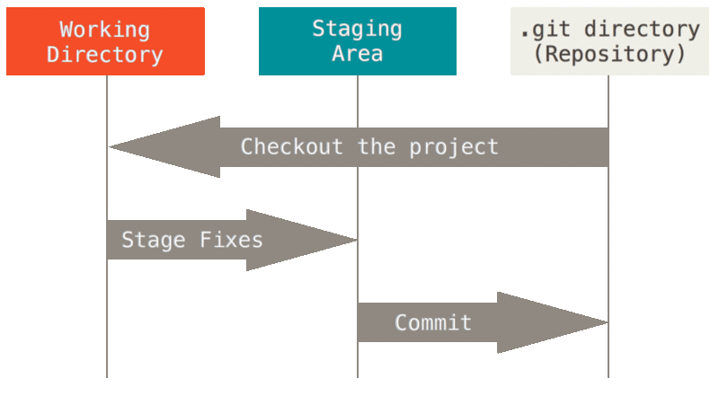
基本的 git 工作流程：
- 在工作目录中修改文件。
- 暂存文件，将文件的快照放入暂存区域。
- 提交更新，找到暂存区域的文件，将快照永久性存储到 Git 仓库目录。
安装 git
可以使用 git clone 获取自身的升级。
$ git clone git://git.kernel.org/pub/scm/git/git.git
初次运行 git 前的配置
Git 自带一个 git config 的工具来帮助设置控制 Git 外观和行为的配置变量。 这些变量存储在三个不同的位置：
- /etc/gitconfig 文件: 包含系统上每一个用户及他们仓库的通用配置。 如果使用带有 –system 选项的 git config 时，它会从此文件读写配置变量。
- ~/.gitconfig 或 ~/.config/git/config 文件：只针对当前用户。 可以传递 –global 选项让 Git 读写此文件。
- 当前使用仓库的 Git 目录中的 config 文件（就是 .git/config）：针对该仓库。
每一个级别覆盖上一级别的配置，所以 .git/config 的配置变量会覆盖 etc/gitconfig 中的配置变量。【ME：没有根用户权限的话会把 –global 设置保存在 ~.gitconfig】
【ME: 使用下面的命令查看配置信息】
$ git config --list $ git config -l
用户信息
每一个 Git 的提交都会使用这些信息，并且它会写入到你的每一次提交中，不可更改：
$ git config --global user.name "John Doe" $ git config --global user.email johndoe@example.com
注意：强调，如果使用了 –global 选项，那么该命令只需要运行一次，因为之后无论你在该系统上做任何事情， Git 都会使用那些信息。 当你想针对特定项目使用不同的用户名称与邮件地址时，可以在那个项目目录下运行没有 –global 选项的命令来配置。
文本编辑器
Git 需要你输入信息时会调用它。 如果未配置，Git 会使用操作系统默认的文本编辑器，通常是 Vim。 如果你想使用不同的文本编辑器，例如 Emacs，可以这样做：
$ git config --global core.editor emacs
注意：你可能会看到重复的变量名，因为 Git 会从不同的文件中读取同一个配置（例如：/etc/gitconfig 与 ~/.gitconfig）。 这种情况下，Git 会使用它找到的每一个变量的最后一个配置。
你可以通过输入 git config ： 来检查 Git 的某一项配置
$ git config user.name
获取帮助
若你使用 Git 时需要获取帮助，有三种方法可以找到 Git 命令的使用手册：
$ git help <verb> $ git <verb> --help $ man git-<verb>
例如，要想获得 config 命令的手册，执行
$ git help config
还可以尝试在 Freenode IRC 服务器（ irc.freenode.net ）的 #git 或 #github 频道寻求帮助。 这些频道经常有上百人在线，他们都精通 Git 并且乐于助人。
2. Git 基础
假如你只能阅读一章来学习 Git，本章就是你的不二选择。
- 配置并初始化一个仓库（repository）、
- 开始或停止跟踪（track）文件、
- 暂存（stage）或提交（commit)更改。
本章也将向你演示:
- 如何配置 Git 来忽略指定的文件和文件模式、
- 如何迅速而简单地撤销错误操作、
- 如何浏览你的项目的历史版本以及不同提交（commits）间的差异、
- 如何向你的远程仓库推送（push）以及
- 如何从你的远程仓库拉取（pull）文件。
获取 Git 仓库
两种方法：第一种是在现有项目或目录下导入所有文件到 Git 中； 第二种是从一个服务器克隆一个现有的 Git 仓库。
在现有目录中初始化仓库
如果你打算使用 Git 来对现有的项目进行管理，你只需要进入该项目目录并输入：
$ git init
这个时候，我们仅仅是做了一个初始化的操作【ME：创建了 .git 子目录】，你的项目里的文件还没有被跟踪。
如果你是在一个已经存在文件的文件夹（而不是空文件夹）中初始化 Git 仓库来进行版本控制的话，你应该开始跟踪这些文件并提交。 你可通过 git add 命令来实现对指定文件的跟踪，然后执行 git commit 提交：
$ git add *.c $ git add LICENSE $ git commit -m 'initial project version'
现在，你已经得到了一个实际维护（或者说是跟踪）着若干个文件的 Git 仓库。
克隆现有的仓库
如果你想获得一份已经存在了的 Git 仓库的拷贝，请留心一下你所使用的命令是"clone"而不是"checkout"。 这是 Git 区别于其它版本控制系统的一个重要特性，Git 克隆的是该 Git 仓库服务器上的几乎所有数据，而不是仅仅复制完成你的工作所需要文件。 当你执行 git clone 命令的时候，默认配置下远程 Git 仓库中的每一个文件的每一个版本都将被拉取下来。 事实上，如果你的服务器的磁盘坏掉了，你通常可以使用任何一个克隆下来的用户端来 重建 服务器上的仓库（虽然可能会丢失某些服务器端的挂钩设置，但是所有版本的数据仍在，详见【在服务器上搭建 Git】）。
克隆仓库的命令格式是 git clone [url] 。
$ git clone https://github.com/libgit2/libgit2
这会在当前目录下 创建一个名为 “libgit2” 的目录 ，并在这个目录下初始化一个 .git 文件夹，从远程仓库拉取下所有数据放入 .git 文件夹，然后从中读取最新版本的文件的拷贝。
如果你想在克隆远程仓库的时候， 自定义本地仓库的名字 ，你可以使用如下命令：
$ git clone https://github.com/libgit2/libgit2 mylibgit
本地创建的仓库名字变为 mylibgit。
Git 支持多种数据传输协议。 上面的例子使用的是 https:// 协议，不过你也可以使用 git:// 协议或者使用 SSH 传输协议，比如 user@server:path/to/repo.git 。
记录每次更新到仓库
工作目录下的每一个文件都不外乎这两种状态：已跟踪或未跟踪:
- 已跟踪的文件是指那些被纳入了版本控制的文件，在上一次快照中有它们的记录，在工作一段时间后，它们的状态可能处于未修改，已修改或已放入暂存区。
- 工作目录中除已跟踪文件以外的所有其它文件都属于未跟踪文件，它们既不存在于上次快照的记录中，也没有放入暂存区。
初次克隆某个仓库的时候，工作目录中的所有文件都属于已跟踪文件，并处于未修改状态。
编辑过某些文件之后，由于自上次提交后你对它们做了修改，Git 将它们标记为已修改文件。 我们逐步将这些修改过的文件放入暂存区，然后提交所有暂存了的修改，如此反复。所以使用 Git 时文件的 生命周期 如下：
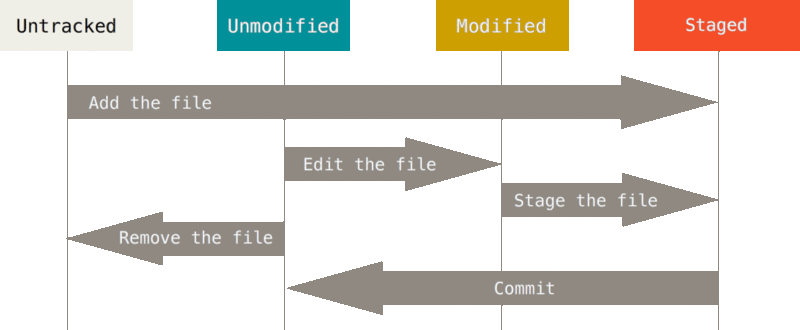
检查当前文件状态
查看哪些文件处于什么状态，可以用 git status 命令。
如果之前并不存某个文件，使用 git status 命令，你将看到一个新的未跟踪文件，Git 不会自动将之纳入跟踪范围，除非你明明白白地告诉它“我需要跟踪该文件”， 这样的处理让你不必担心将生成的二进制文件或其它不想被跟踪的文件包含进来。
跟踪新文件
$ git add README
此时再运行 git status 命令，会看到 README 文件已被跟踪，并处于暂存状态：
$ git status On branch master Changes to be committed: (use "git reset HEAD <file>..." to unstage) new file: README
只要在 Changes to be committed 这行下面的，就说明是已暂存状态。 如果此时提交，那么该文件此时此刻的版本将被留存在历史记录中。 你可能会想起之前我们使用 git init 后就运行了 git add (files) 命令，开始跟踪当前目录下的文件。 git add 命令使用文件或目录的路径作为参数；如果参数是目录的路径，该命令将递归地跟踪该目录下的所有文件。
暂存已修改文件
如果我们修改一个已被跟踪的文件，运行 git status，这个文件将出现在 Changes not staged for commit 这行下面，说明已跟踪文件的内容发生了变化，但还没有放到暂存区。 要暂存这次更新，需要运行 git add 命令。 这是个 多功能命令 ：
- 可以用它开始跟踪新文件，
- 或者把已跟踪的文件放到暂存区，
- 还能用于合并时把有冲突的文件标记为已解决状态等。
将这个命令理解为 “添加内容到下一次提交中” 而不是“将一个文件添加到项目中”要更加合适。
如果再次修改这个文件，这个文件将同时出现再暂存区和非暂存区 – 实际上 git 只不过暂存了运行 git add 时文件的版本，如果现在提交，提交的将会是最后一次运行 git add 时的版本，而不是工作目录中的当前版本（运行 git add 后又修改了一次），因此需要再次运行 git add 把最新版本暂存起来。
状态简览
git status 命令的输出十分详细，但其用语有些繁琐。 如果你使用 git status -s 命令或 git status --short 命令，你将得到一种更为紧凑的格式输出。
忽略文件
可以创建一个名为 .gitignore 的文件，列出要忽略的文件模式。例子：
$ cat .gitignore *.[oa] *~
第一行告诉 Git 忽略所有以 .o 或 .a 结尾的文件。一般这类对象文件和存档文件都是编译过程中出现的。 第二行告诉 Git 忽略所有以波浪符（~）结尾的文件，许多文本编辑软件（比如 Emacs）都用这样的文件名保存副本。 此外，你可能还需要忽略 log，tmp 或者 pid 目录，以及自动生成的文档等等。 要养成一开始就设置好 .gitignore 文件的习惯，以免将来误提交这类无用的文件。
文件 .gitignore 的格式规范如下：
- 所有空行或者以 ＃ 开头的行都会被 Git 忽略。
- 可以使用标准的 glob 模式匹配。
- 匹配模式可以以（/）开头防止递归。
- 匹配模式可以以（/）结尾指定目录。
- 要忽略指定模式以外的文件或目录，可以在模式前加上惊叹号（!）取反。
所谓的 glob 模式是指 shell 所使用的简化了的正则表达式。:
- 星号（*）匹配零个或多个任意字符；
- [abc] 匹配任何一个列在方括号中的字符（这个例子要么匹配一个 a，要么匹配一个 b，要么匹配一个 c）；
- 问号（?）只匹配一个任意字符；
- 如果在方括号中使用短划线分隔两个字符，表示所有在这两个字符范围内的都可以匹配（比如 [0-9] 表示匹配所有 0 到 9 的数字）。
- 使用两个星号（**) 表示匹配任意中间目录，比如 a/**/z 可以匹配 a/z, a/b/z 或 a/b/c/z等。
- Use ! to include.
Example of .gitignore:
# no .a files *.a # but do track lib.a, even though you're ignoring .a files above !lib.a # only ignore the TODO file in the current directory, not subdir/TODO /TODO # ignore all files in the build/ directory build/ # ignore doc/notes.txt, but not doc/server/arch.txt doc/*.txt # ignore all .pdf files in the doc/ directory doc/**/*.pdf
Tip
GitHub 有一个十分详细的针对数十种项目及语言的 .gitignore 文件列表，你可以在https://github.com/github/gitignore 找到它.
查看已暂存和未暂存的修改
如果我们想知道具体修改了什么地方，可以使用 git diff 命令。通常会用它来回答这两个问题：
- 当前做的哪些更新还没有暂存？
- 有哪些更新已经暂存起来准备好了下次提交？
尽管 git status 已经通过在相应栏下列出文件名的方式回答了这个问题，git diff 将通过文件补丁的格式显示具体哪些行发生了改变。
若要查看已暂存的将要添加到下次提交里的内容，可以用 git diff --cached 命令。（Git 1.6.1 及更高版本还允许使用 git diff --staged ，效果是相同的，但更好记些。）
注意，git diff 本身只显示尚未暂存的改动，而不是自上次提交以来所做的所有改动。 所以有时候你一下子暂存了所有更新过的文件后，运行 git diff 后却什么也没有，就是这个原因。
提示：如果你喜欢通过图形化的方式或其它格式输出方式的话，可以使用 git difftool 命令来用 Araxis ，emerge 或 vimdiff 等软件输出 diff 分析结果。 使用 git difftool --tool-help 命令来看你的系统支持哪些 Git Diff 插件。
提交更新
现在的暂存区域已经准备妥当可以提交了。 在此之前，请一定要确认还有什么修改过的或新建的文件还没有 git add 过，否则提交的时候不会记录这些还没暂存起来的变化。 这些修改过的文件只保留在本地磁盘。 所以，每次准备提交前， 先用 git status 看下，是不是都已暂存起来了， 然后再运行提交命令 git commit 。
这种方式会启动文本编辑器以便输入本次提交的说明。 (默认会启用 shell 的环境变量 $EDITOR 所指定的软件，一般都是 vim 或 emacs。当然也可以按照 起步 介绍的方式，使用 git config --global core.editor 命令设定你喜欢的编辑软件。）
默认的提交消息包含最后一次运行 git status 的输出，放在注释行里，另外开头还有一空行，供你输入提交说明。 你完全可以去掉这些注释行，不过留着也没关系，多少能帮你回想起这次更新的内容有哪些。 (如果想要 更详细的对修改了哪些内容的提示 ，可以用 -v 选项，这会将你所做的改变的 diff 输出放到编辑器中从而使你知道本次提交具体做了哪些修改。） 退出编辑器时，Git 会丢掉注释行，用你输入提交附带信息生成一次提交。
你也可以在 commit 命令后添加 -m 选项，将提交信息与命令放在同一行：
$ git commit -m "Story 182: Fix benchmarks for speed"
提交后它会告诉你，当前是在哪个分支（master）提交的，本次提交的完整 SHA-1 校验和是什么（463dc4f），以及在本次提交中，有多少文件修订过，多少行添加和删改过。
跳过使用暂存区域
尽管使用暂存区域的方式可以精心准备要提交的细节，但有时候这么做略显繁琐。 Git 提供了一个 跳过使用暂存区域 的方式（提交之前不再需要 git add 文件了）， 只要在提交的时候，给 git commit 加上 -a 选项，Git 就会自动把所有已经跟踪过的文件暂存起来一并提交，从而跳过 git add 步骤:
git commit -a
移除文件
要从 Git 中移除某个文件，就必须要从已跟踪文件清单中移除（确切地说，是 从暂存区域移除 ）， 然后提交 。 可以用 git rm 命令完成此项工作，并 连带从工作目录中删除指定的文件 ，这样以后就不会出现在未跟踪文件清单中了。
如果只是简单地从工作目录中手工删除文件，运行 git status 时就会在 “Changes not staged for commit” 部分（也就是 未暂存清单）看到提示信息：“deleted xxxx”
然后再运行 git rm 记录此次移除文件的操作。
下一次提交时，该文件就不再纳入版本管理了。
注意： 如果删除之前文件已经被修改过并且已经放到暂存区域 的话，则必须要用 强制删除选项 -f （译注：即 force 的首字母）。 这是一种 安全特性 ，用于防止误删还没有添加到快照的数据，这样的数据不能被 Git 恢复。
另外一种情况是，我们想 把文件从 Git 仓库中删除（亦即从暂存区域移除），但仍然希望保留在当前工作目录中 。 换句话说，你想让文件保留在磁盘，但是并不想让 Git 继续跟踪。 当你忘记添加 .gitignore 文件，不小心把一个很大的日志文件或一堆 .a 这样的编译生成文件添加到暂存区时，这一做法尤其有用。 为达到这一目的，使用 --cached 选项:
$ git rm --cached README
移动文件
不像其它的 VCS 系统，Git 并不显式跟踪文件移动操作。 如果在 Git 中重命名了某个文件，仓库中存储的元数据并不会体现出这是一次改名操作。 不过 Git 非常聪明，它会推断出究竟发生了什么。
Git 的 mv 命令可以对文件改名，例如：
$ git mv file_from file_to
相当于运行了下面三条命令：
$ mv README.md README $ git rm README.md $ git add README
查看提交历史
在项目根目录下运行 git log
默认不用任何参数的话，git log 会按提交时间列出所有的更新，最近的更新排在最上面。 正如你所看到的，这个命令会列出每个提交的 SHA-1 校验和、作者的名字和电子邮件地址、提交时间以及提交说明。
git log 有许多选项可以帮助你搜寻你所要找的提交， 最有用的选项 ：
-p：显示每次提交的内容差异。 你也可以加上-n来仅显示最近n次提交。除了显示基本信息之外，还附带了每次 commit 的变化。 当进行代码审查，或者快速浏览某个搭档提交的 commit 所带来的变化的时候，这个参数就非常有用了。--stat：为 git log 附带一系列的总结性选项。 比如说，如果你想看到每次提交的简略的统计信息。在每次提交的下面列出额所有被修改过的文件、有多少文件被修改了以及被修改过的文件的哪些行被移除或是添加了。 在每次提交的最后还有一个总结。--pretty：指定使用不同于默认格式的方式展示提交历史。 这个选项有一些内建的子选项供你使用。 比如用 oneline 将每个提交放在一行显示（命令git log --pretty=oneline），查看的提交数很大时非常有用。 另外还有short，full和fuller可以用，展示的信息或多或少有些不同。但最有意思的是 =format=，可以定制要显示的记录格式。 这样的输出对后期提取分析格外有用 — 因为你知道输出的格式不会随着Git的更新而发生改变（例如 =git log –pretty=format:"%h - %an, %ar : %s"= ）- 当 oneline 或 format 与另一个 log 选项
--graph结合使用时尤其有用。 这个选项添加了一些ASCII字符串来形象地展示你的分支、合并历史
--pretty 的常用选项：
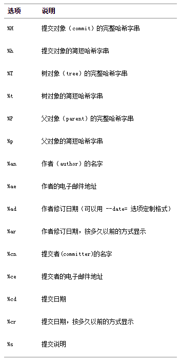
git log 的常用选项：
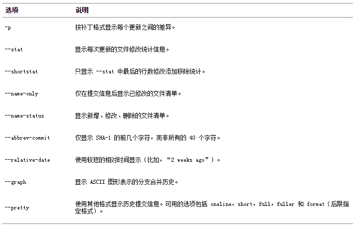
提示：作者 和 提交者 之间究竟有何差别？
其实作者指的是实际作出修改的人，提交者指的是最后将此工作成果提交到仓库的人。 所以，当你为某个项目发布补丁，然后某个核心成员将你的补丁并入项目时，你就是作者，而那个核心成员就是提交者。
限制输出长度
git log -n 将显示最近的n条提交，实际上Git 在输出所有提交时会自动调用分页程序，所以你一次只会看到一页的内容。
还有按照时间作限制的选项，比如 --since 和 --until 也很有用。 例如，下面的命令列出所有 最近两周内 的提交：
$ git log --since=2.weeks
这个命令可以在多种格式下工作，比如说具体的某一天 "2008-01-15"，或者是相对地多久以前 "2 years 1 day 3 minutes ago"。
还可以给出若干搜索条件，列出符合的提交。 用 --author 选项显示指定作者的提交，用 --grep 选项搜索提交说明中的关键字。 （请注意，如果要得到同时满足这两个选项搜索条件的提交，就必须用 --all-match 选项。否则，满足任意一个条件的提交都会被匹配出来）
另一个非常有用的筛选选项是 -S ，可以列出那些添加或移除了某些字符串的提交。 比如说，你想找出添加或移除了某一个特定函数的引用的提交，你可以这样使用：
$ git log -Sfunction_name
最后一个很实用的 git log 选项是 路径(path) ， 如果只关心某些文件或者目录的历史提交，可以 在 git log 选项的最后指定它们的路径 。 因为是放在最后位置上的选项，所以 用两个短划线（–）隔开之前的选项和后面限定的路径名 。
Table 2-3. 限制 git log 输出的选项
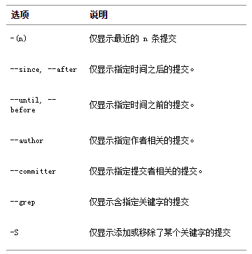
例子，如果要查看 Git 仓库中，2008 年 10 月期间，Junio Hamano 提交的但未合并的测试文件，可以用下面的查询命令：
$ git log --pretty="%h - %s" --author=gitster --since="2008-10-01" \
--before="2008-11-01" --no-merges -- t/
5610e3b - Fix testcase failure when extended attributes are in use
acd3b9e - Enhance hold_lock_file_for_{update,append}() API
f563754 - demonstrate breakage of detached checkout with symbolic link HEAD
d1a43f2 - reset --hard/read-tree --reset -u: remove unmerged new paths
51a94af - Fix "checkout --track -b newbranch" on detached HEAD
b0ad11e - pull: allow "git pull origin $something:$current_branch" into an unborn branch
在近40000条提交中，上面的输出仅列出了符合条件的6条记录。
撤消操作
在任何一个阶段，你都有可能想要撤消某些操作。 这里，我们将会学习几个撤消你所做修改的基本工具。
注意 ，有些撤消操作是 不可逆 的。 这是在使用 Git 的过程中，会因为操作失误而导致之前的工作丢失的少有的几个地方之一。
有时候我们提交完了才发现 漏掉了几个文件没有添加，或者提交信息写错了 。 此时，可以运行带有 --amend 选项的提交命令 尝试重新提交 ：
$ git commit --amend
这个命令会 将暂存区中的文件提交 。
如果自上次提交以来你还未做任何修改（例如，在上次提交后马上执行了此命令），那么快照会保持不变，而你所修改的只是提交信息。
例如，你 提交后发现忘记了暂存某些需要的修改 ，可以像下面这样操作：
$ git commit -m 'initial commit' $ git add forgotten_file $ git commit --amend
最终你 只会有一个提交 - 第二次提交将代替第一次提交的结果 。
取消暂存的文件
在操作暂存区域与工作目录中已修改的文件时，这些命令在修改文件状态的同时，也会提示如何撤消操作。
例如，你已经修改了两个文件并且想要将它们作为两次独立的修改提交，但是却意外地输入了 git add * 暂存了它们两个。 如何 只取消暂存两个中的一个 呢？ git status 命令提示了你：
$ git add *
$ git status
On branch master
Changes to be committed:
(use "git reset HEAD <file>..." to unstage)
renamed: README.md -> README
modified: CONTRIBUTING.md
所以，我们可以这样来 取消暂存 CONTRIBUTING.md 文件 ：
$ git reset HEAD CONTRIBUTING.md
Unstaged changes after reset:
M CONTRIBUTING.md
$ git status
On branch master
Changes to be committed:
(use "git reset HEAD <file>..." to unstage)
renamed: README.md -> README
Changes not staged for commit:
(use "git add <file>..." to update what will be committed)
(use "git checkout -- <file>..." to discard changes in working directory)
modified: CONTRIBUTING.md
警告 ：在调用时加上 --hard 选项可以令 git reset 成为一个危险的命令（译注：可能导致工作目录中所有当前进度丢失！），但本例中工作目录内的文件并不会被修改。 不加选项地调用 git reset 并不危险 — 它只会修改暂存区域 。
撤消对文件的修改
如果你并不想保留对 CONTRIBUTING.md 文件的修改怎么办？ 你该如何方便地 撤消修改 - 将它还原成上次提交时的样子 （ 或者刚克隆完的样子，或者刚把它放入工作目录时的样子 ）？
【ME：看上节最后例子中关于 git checkout 的提示】
$ git checkout -- CONTRIBUTING.md
$ git status
On branch master
Changes to be committed:
(use "git reset HEAD <file>..." to unstage)
renamed: README.md -> README
警告 ：git checkout – [file] 是一个 危险 的命令，这很重要。 你对那个文件做的任何修改都会消失 - 你只是拷贝了另一个文件来覆盖它。 除非你确实清楚不想要那个文件了，否则不要使用这个命令。
如果你仍然 想保留对那个文件做出的修改，但是现在仍然需要撤消 ，我们将会在 Git 分支 介绍保存进度与分支；这些通常是更好的做法。
记住 ，在 Git 中 任何 已提交的 东西几乎总是可以恢复的 。 甚至那些被删除的分支中的提交或使用 –amend 选项覆盖的提交也可以恢复 （阅读 数据恢复 了解数据恢复）。 然而，任何你 未提交的东西丢失后很可能再也找不到了 。
远程仓库的使用
远程仓库是指托管在因特网或其他网络中的你的项目的版本库。
与他人协作涉及管理远程仓库以及根据需要推送或拉取数据。
管理远程仓库包括了解
- 如何添加远程仓库、
- 移除无效的远程仓库、
- 管理不同的远程分支并定义它们是否被跟踪等等。
查看远程仓库
git remote 命令。 它会列出你指定的每一个远程服务器的简写。
如果你已经克隆了自己的仓库，那么至少应该能看到 origin - 这是 Git 给你克隆的仓库服务器的默认名字。
$ git clone https://github.com/schacon/ticgit Cloning into 'ticgit'... remote: Reusing existing pack: 1857, done. remote: Total 1857 (delta 0), reused 0 (delta 0) Receiving objects: 100% (1857/1857), 374.35 KiB | 268.00 KiB/s, done. Resolving deltas: 100% (772/772), done. Checking connectivity... done. $ cd ticgit $ git remote origin
可以指定选项 -v ，会显示需要读写远程仓库使用的 Git 保存的简写与其对应的 URL。
如果你的远程仓库不止一个，该命令会将它们全部列出。 例如，与几个协作者合作的，拥有多个远程仓库的仓库.这样我们可以轻松拉取其中任何一个用户的贡献。
添加远程仓库
git remote add 添加一个新的远程 Git 仓库，同时指定一个你可以轻松引用的简写：
$ git remote origin $ git remote add pb https://github.com/paulboone/ticgit $ git remote -v origin https://github.com/schacon/ticgit (fetch) origin https://github.com/schacon/ticgit (push) pb https://github.com/paulboone/ticgit (fetch) pb https://github.com/paulboone/ticgit (push)
现在你可以在命令行中使用字符串 pb 来代替整个 URL。
从远程仓库中抓取与拉取
$ git fetch [remote-name]
访问远程仓库，从中拉取所有你 还没有 的数据。 执行完成后，你将会 拥有那个远程仓库中所有分支的引用 ，可以 随时合并或查看 。
如果你使用 git clone 命令克隆了一个仓库， 命令会自动将其添加为远程仓库并默认以 “origin” 为简写 。 所以， git fetch origin 会 抓取克隆（或上一次抓取）后新推送的所有工作 。 必须注意 git fetch 命令会 将数据拉取到你的本地仓库 - 它并 不会自动合并或修改 你当前的工作。 当准备好时你必须 手动 将其合并入你的工作。
如果你有 一个分支设置为跟踪一个远程分支 （阅读下一节与 Git 分支 了解更多信息），可以使用 git pull 命令来自动的抓取然后合并远程分支到当前分支。 这对你来说可能是一个更简单或更舒服的工作流程；默认情况下， git clone 命令会自动设置本地 master 分支跟踪克隆的远程仓库的 master 分支（或不管是什么名字的默认分支） 。 运行 git pull 通常会 从最初克隆的服务器上抓取数据并自动尝试合并到当前所在的分支 。
推送到远程仓库
当你想分享你的项目时，必须将其推送到上游:
git push [remote-name] [branch-name]
当你想要将 master 分支推送到 origin 服务器时（再次说明，克隆时通常会自动帮你设置好那两个名字）:
$ git push origin master
只有当你有 所克隆服务器的写入权限 ，并且 之前没有人推送过时 ，这条命令才能生效。 当你和其他人在同一时间克隆，他们先推送到上游然后你再推送到上游，你的推送就会毫无疑问地被 拒绝 。 你必须 先将他们的工作拉取下来 并将其 合并进你的工作后 才能推送。 阅读 Git 分支 了解如何推送到远程仓库服务器的详细信息。
查看远程仓库
查看某一个远程仓库的更多信息，可以使用 git remote show [remote-name] 命令。
$ git remote show origin
* remote origin
Fetch URL: https://github.com/schacon/ticgit
Push URL: https://github.com/schacon/ticgit
HEAD branch: master
Remote branches:
master tracked
dev-branch tracked
Local branch configured for 'git pull':
master merges with remote master
Local ref configured for 'git push':
master pushes to master (up to date)
远程仓库的移除与重命名
重命名引用的名字可以运行 git remote rename [old_name] [new_name] 去修改一个远程仓库的简写名。
如果因为一些原因想要移除一个远程仓库 - 你已经从服务器上搬走了或不再想使用某一个特定的镜像了，又或者某一个贡献者不再贡献了 - 可以使用 git remote rm [repo_alias]
打标签
Git 可以给历史中的某一个提交打上标签，以示重要。比较有代表性的是人们会使用这个功能来标记发布结点（v1.0 等等）。
列出标签
git tag
以字母顺序列出标签；但是它们出现的顺序并不重要。
可以 使用特定的模式查找标签 。 例如，Git 自身的源代码仓库包含标签的数量超过 500 个。 如果只对 1.8.5 系列感兴趣，可以运行：
$ git tag -l 'v1.8.5*' v1.8.5 v1.8.5-rc0 v1.8.5-rc1 v1.8.5-rc2 v1.8.5-rc3 v1.8.5.1 v1.8.5.2 v1.8.5.3 v1.8.5.4 v1.8.5.5
创建标签
Git 使用两种主要类型的标签：轻量标签（lightweight）与附注标签（annotated）。
一个轻量标签很像一个不会改变的分支 - 它只是一个 特定提交的引用 。
然而， 附注标签是存储在 Git 数据库中的一个完整对象 。 它们是可以被校验的；其中包含打标签者的名字、电子邮件地址、日期时间；还有一个标签信息；并且可以使用 GNU Privacy Guard （GPG）签名与验证。
通常建议创建附注标签，这样你可以拥有以上所有信息；但是如果你只是想用一个临时的标签，或者因为某些原因不想要保存那些信息，轻量标签也是可用的。
附注标签
在运行 tag 命令时指定 -a 选项：
$ git tag -a v1.4 -m 'my version 1.4' $ git tag v0.1 v1.3 v1.4
-m 选项指定了一条将会存储在标签中的信息。 如果没有为附注标签指定一条信息，Git 会运行编辑器要求你输入信息。
通过使用 git show 命令可以看到标签信息与对应的提交信息：
$ git show v1.4
tag v1.4
Tagger: Ben Straub <ben@straub.cc>
Date: Sat May 3 20:19:12 2014 -0700
my version 1.4
commit ca82a6dff817ec66f44342007202690a93763949
Author: Scott Chacon <schacon@gee-mail.com>
Date: Mon Mar 17 21:52:11 2008 -0700
changed the version number
输出显示了打标签者的信息、打标签的日期时间、附注信息，然后显示具体的提交信息。
轻量标签
轻量标签本质上是将提交校验和存储到一个文件中 - 没有保存任何其他信息。 创建轻量标签，不需要使用 -a、-s 或 -m 选项，只需要提供标签名字。
如果在标签上运行 git show，你不会看到额外的标签信息。 命令只会显示出提交信息：
$ git show v1.4-lw
commit ca82a6dff817ec66f44342007202690a93763949
Author: Scott Chacon <schacon@gee-mail.com>
Date: Mon Mar 17 21:52:11 2008 -0700
changed the version number
后期打标签
可以 对过去的提交打标签 。 假设提交历史是这样的：
$ git log --pretty=oneline 15027957951b64cf874c3557a0f3547bd83b3ff6 Merge branch 'experiment' a6b4c97498bd301d84096da251c98a07c7723e65 beginning write support 0d52aaab4479697da7686c15f77a3d64d9165190 one more thing 6d52a271eda8725415634dd79daabbc4d9b6008e Merge branch 'experiment' 0b7434d86859cc7b8c3d5e1dddfed66ff742fcbc added a commit function 4682c3261057305bdd616e23b64b0857d832627b added a todo file 166ae0c4d3f420721acbb115cc33848dfcc2121a started write support 9fceb02d0ae598e95dc970b74767f19372d61af8 updated rakefile <------- 964f16d36dfccde844893cac5b347e7b3d44abbc commit the todo 8a5cbc430f1a9c3d00faaeffd07798508422908a updated readme
假设在 v1.2 时你忘记给项目打标签，也就是在 “updated rakefile” 提交。 你可以在之后补上标签。 要在那个提交上打标签，你需要在命令的末尾指定提交的校验和（或部分校验和）:
$ git tag -a v1.2 9fceb02
使用 git show 将看到已经在那次提交上打上了标签。
共享标签
默认情况下，git push 命令并不会传送标签到远程仓库服务器上 。
在创建完标签后你必须 显式地推送标签到共享服务器上 。 这个过程就像共享远程分支一样 - 你可以运行 git push origin [tagname] 。
如果想要 一次性推送很多标签 ，也可以使用带有 --tags 选项的 git push 命令。 这将会把所有不在远程仓库服务器上的标签全部传送到那里。
$ git push origin --tags
现在，当其他人从仓库中克隆或拉取，他们也能得到你的那些标签。
检出标签
在 Git 中你并 不能真的检出一个标签 ，因为它们并不能像分支一样来回移动。
如果你想 要工作目录与仓库中特定的标签版本完全一样 ，可以使用 git checkout -b [branchname] [tagname] 在特定的标签上创建一个新分支：
$ git checkout -b version2 v2.0.0 Switched to a new branch 'version2'
当然，如果在这之后又进行了一次提交，version2 分支会因为改动向前移动了，那么 version2 分支就会和 v2.0.0 标签稍微有些不同，这时就应该 当心 了。
Git 别名
有一个小技巧可以使你的 Git 体验更简单、容易、熟悉：别名。
Git 并不会在你输入部分命令时自动推断出你想要的命令。 如果不想每次都输入完整的 Git 命令，可以通过 git config 文件来轻松地为每一个命令设置一个别名。 这里有一些 例子 你可以试试：
$ git config --global alias.co checkout $ git config --global alias.br branch $ git config --global alias.ci commit $ git config --global alias.st status
创建别名时不要犹豫 。
创建你认为应该存在的命令时这个技术会很有用。 例如，为了 解决取消暂存文件的易用性 问题，可以向 Git 中添加你自己的取消暂存别名 unstage ：
$ git config --global alias.unstage 'reset HEAD --'
通常也会添加一个 last 命令，像这样：
$ git config --global alias.last 'log -1 HEAD'
这样，可以轻松地 看到最后一次提交 。
Git 只是简单地将别名替换为对应的命令。 然而，你可能想要执行外部命令，而不是一个 Git 子命令。 如果是那样的话，可以在命令前面加入 ! 符号。 如果你自己要 写一些与 Git 仓库协作的工具 的话，那会很有用。 我们现在演示将 git visual 定义为 gitk 的别名：
$ git config --global alias.visual '!gitk'
总结
现在，你可以完成所有基本的 Git 本地操作：
- 创建或者克隆一个仓库、
- 做更改、
- 暂存并提交这些更改、
- 浏览你的仓库从创建到现在的所有更改的历史。
下一步，本书将介绍 Git 的杀手级特性：分支模型。
3. Git 分支
几乎所有的版本控制系统都以某种形式支持分支。 使用分支意味着你可以 把你的工作从开发主线上分离开来，以免影响开发主线 。
在很多版本控制系统中，这是一个略微低效的过程——常常需要完全创建一个源代码目录的副本。对于大项目来说，这样的过程会耗费很多时间。
有人把 Git 的分支模型称为它的“必杀技特性”，也正因为这一特性，使得 Git 从众多版本控制系统中脱颖而出。
为何 Git 的分支模型如此出众呢？ Git 处理分支的方式可谓是难以置信的轻量，创建新分支这一操作几乎能在瞬间完成，并且在不同分支之间的切换操作也是一样便捷。 与许多其它版本控制系统不同，Git 鼓励 在工作流程中频繁地使用分支与合并，哪怕一天之内进行许多次。
分支简介
Git 保存的不是文件的变化或者差异，而是一系列不同时刻的文件快照。
在进行提交操作时，Git 会保存一个提交对象（commit object）。该 提交对象 会包含：
- 一个指向暂存内容快照的指针。
- 作者的姓名和邮箱
- 提交时输入的信息
- 指向它的父对象的指针：首次提交产生的提交对象没有父对象，普通提交操作产生的提交对象有一个父对象，而由多个分支合并产生的提交对象有多个父对象
例子：我们假设现在有一个工作目录，里面包含了三个将要被暂存和提交的文件。暂存操作会为每一个文件计算校验和（使用我们在 起步 中提到的 SHA-1 哈希算法），然后会 把当前版本的文件快照保存到 Git 仓库中 （Git 使用 blob 对象 来保存它们），最终将校验和加入到暂存区域等待提交：
$ git add README test.rb LICENSE $ git commit -m 'The initial commit of my project'
当使用 git commit 进行提交操作时，
- Git 会先计算每一个子目录（本例中只有项目根目录）的校验和，然后在 Git 仓库中把这些校验和保存为树对象。
- 随后，Git 便会创建一个提交对象，它除了包含上面提到的那些信息外，还包含指向这个树对象（项目根目录）的指针。如此一来，Git 就可以在需要的时候重现此次保存的快照。
现在，Git 仓库中有五个对象：三个 blob 对象（保存着文件快照）、一个树对象（记录着目录结构和 blob 对象索引）以及一个提交对象（包含着指向前述树对象的指针和所有提交信息）。
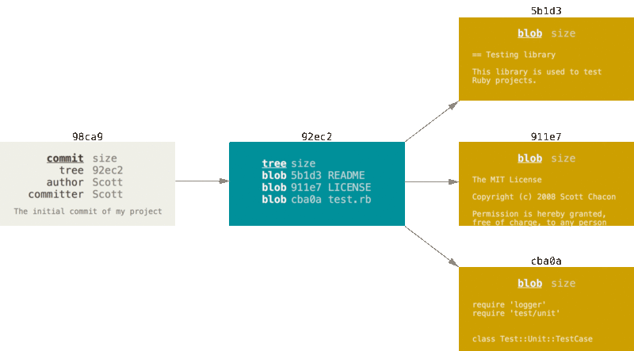
做些修改后再次提交，那么这次产生的提交对象会包含一个指向上次提交对象（父对象）的指针。
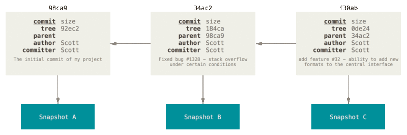
Git 的分支，其实本质上仅仅是指向提交对象的可变指针。 Git 的默认分支名字是 master。 在多次提交操作之后，你其实已经有一个指向最后那个提交对象的 master 分支。 它会在每次的提交操作中自动向前移动。
说明：Git 的 “master” 分支并不是一个特殊分支。 它就跟其它分支完全没有区别。 之所以几乎每一个仓库都有 master 分支，是因为 git init 命令默认创建它，并且大多数人都懒得去改动它。
分支及其提交历史
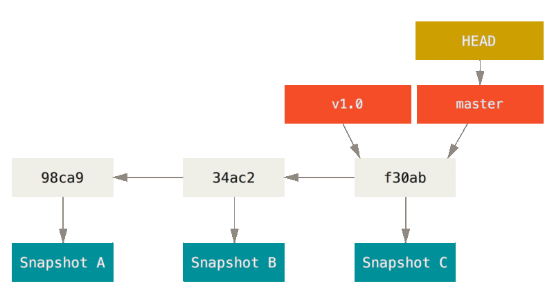
分支创建
Git 是怎么创建新分支的呢？ 很简单，它只是为你创建了一个可以移动的新的指针。 比如，创建一个 testing 分支， 你需要使用 git branch 命令：
$ git branch testing
这会在当前所在的提交对象上创建一个指针。
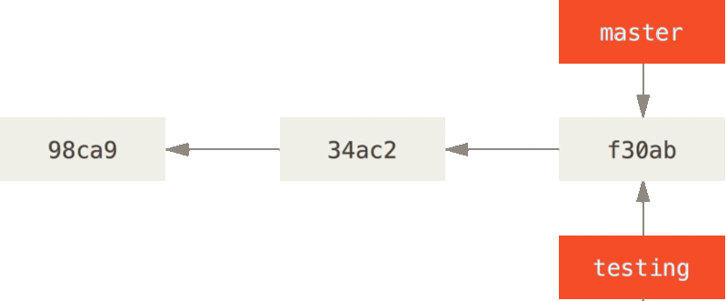
那么，Git 又是怎么知道当前在哪一个分支上呢？ 也很简单，它有一个名为 HEAD 的特殊指针。 请注意它和许多其它版本控制系统（如 Subversion 或 CVS）里的 HEAD 概念 完全不同 。 在 Git 中，它是一个指针， 指向当前所在的本地分支 （译注：将 HEAD 想象为当前分支的别名）。 在本例中，你仍然在 master 分支上。 因为 git branch 命令仅仅 创建 一个新分支，并不会自动切换到新分支中去。
HEAD 指向当前坐在的本地分支：
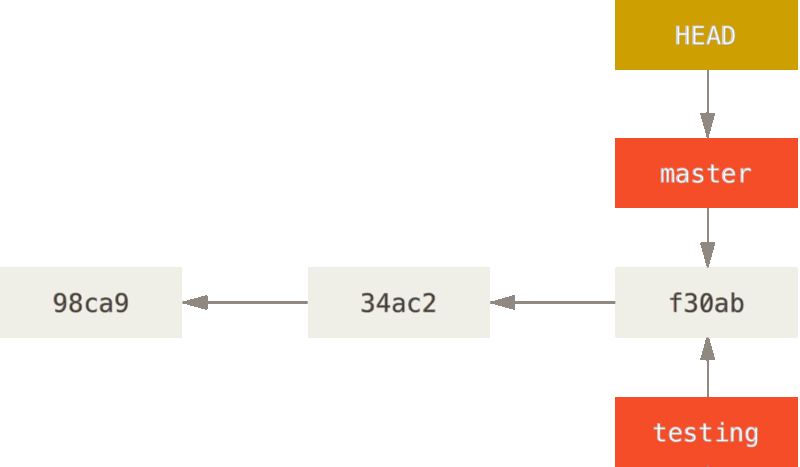
可以简单地使用 git log 命令查看各个分支当前所指的对象。 提供这一功能的参数是 --decorate ：
$ git log --oneline --decorate f30ab (HEAD, master, testing) add feature #32 - ability to add new 34ac2 fixed bug #1328 - stack overflow under certain conditions 98ca9 initial commit of my project
正如你所见，当前 “master” 和 “testing” 分支均指向校验和以 f30ab 开头的提交对象。
分支切换
要切换到一个已存在的分支，你需要使用 git checkout 命令。 我们现在切换到新创建的 testing 分支去：
$ git checkout testing
这样 HEAD 就指向 testing 分支了：
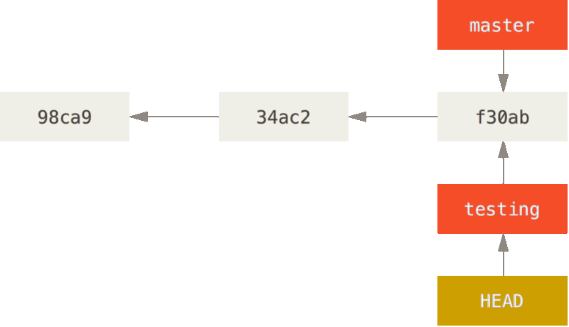
那么，这样的实现方式会给我们带来什么好处呢？ 现在不妨再提交一次：
$ vim test.rb $ git commit -a -m 'made a change'
【ME：注意：此处使用 git commit -a 跳过了 add 环节。】
HEAD 分支随着提交操作自动向前移动：
如图所示，你的 testing 分支向前移动了，但是 master 分支却没有，它仍然指向运行 git checkout 时所指的对象。 这就有意思了，现在我们切换回 master 分支看看：
$ git checkout master
检出时 HEAD 随之移动：
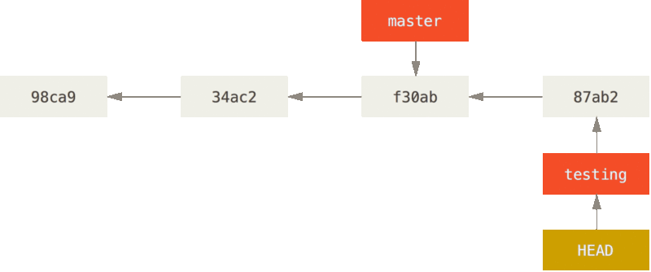
这条命令做了两件事。 一是使 HEAD 指回 master 分支，二是将工作目录恢复成 master 分支所指向的快照内容。 也就是说，你现在做修改的话，项目将始于一个较旧的版本。 本质上来讲，这就是忽略 testing 分支所做的修改，以便于向另一个方向进行开发。
注意：分支切换会 改变 你工作目录中的文件 。在 切换分支 时，一定要注意你 工作目录里的文件会被改变 。[ME: therefore we should either stage the modification, or stash them]. 如果是切换到一个较旧的分支，你的工作目录会恢复到该分支最后一次提交时的样子。 如果 Git 不能干净利落地完成这个任务，它将禁止切换分支。
不妨再稍微做些修改并提交：
$ vim test.rb $ git commit -a -m 'made other changes'
现在，这个项目的提交历史已经产生了分叉：
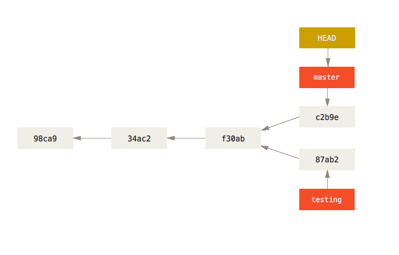
可以在不同分支间不断地 来回切换和工作 ，并在时机成熟时将它们合并起来。 而所有这些工作，你需要的命令只有 branch、checkout 和 commit 。
可以简单地使用 git log 命令查看分叉历史。 运行
git log --oneline --decorate --graph --all
它会输出你的提交历史、各个分支的指向以及项目的分支分叉情况：
$ git log --oneline --decorate --graph --all
* c2b9e (HEAD, master) made other changes
| * 87ab2 (testing) made a change
|/
* f30ab add feature #32 - ability to add new formats to the
* 34ac2 fixed bug #1328 - stack overflow under certain conditions
* 98ca9 initial commit of my project
由于 Git 的分支实质上仅是包含所指对象校验和（长度为 40 的 SHA-1 值字符串）的文件，所以它的创建和销毁都异常高效。 创建一个新分支就像是往一个文件中写入 41 个字节（40 个字符和 1 个换行符）。
在 Git 中，任何规模的项目都能在瞬间创建新分支。 同时，由于每次提交都会记录父对象，所以寻找恰当的 合并基础（译注：即共同祖先） 也是同样的简单和高效。 这些高效的特性使得 Git 鼓励 开发人员频繁地创建和使用分支。
让我们看看 为什么 你应该这么做？
分支的新建与合并
让我们来看一个简单的分支新建与分支合并的例子，实际工作中你可能会用到类似的工作流。 你将经历如下步骤：
- 开发某个网站。
- 为实现某个新的需求，创建一个分支。
- 在这个分支上开展工作。
正在此时，你突然接到一个电话说有个很严重的问题需要紧急修补。 你将按照如下方式来处理：
- 切换到你的线上分支（production branch）。
- 为这个紧急任务新建一个分支，并在其中修复它。
- 在测试通过之后，切换回线上分支，然后合并这个修补分支，最后将改动推送到线上分支。
- 切换回你最初工作的分支上，继续工作。
新建分支
首先，我们假设你正在你的项目上工作，并且已经有一些提交。
一个简单的提交历史：
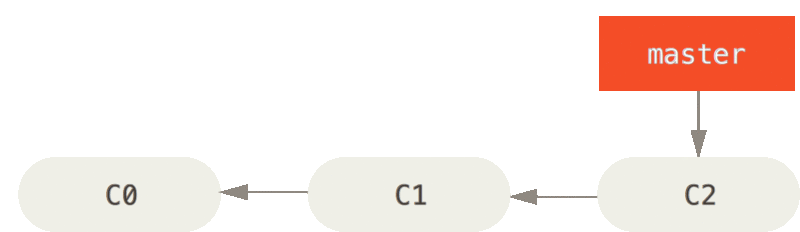
现在，你已经决定要解决你的公司使用的问题追踪系统中的 #53 问题。 想要新建一个分支并同时切换到那个分支上，你可以运行一个带有 -b 参数的 git checkout 命令：
$ git checkout -b iss53 Switched to a new branch "iss53"
它是下面两条命令的简写：
$ git branch iss53 $ git checkout iss53
创建一个新分支指针：
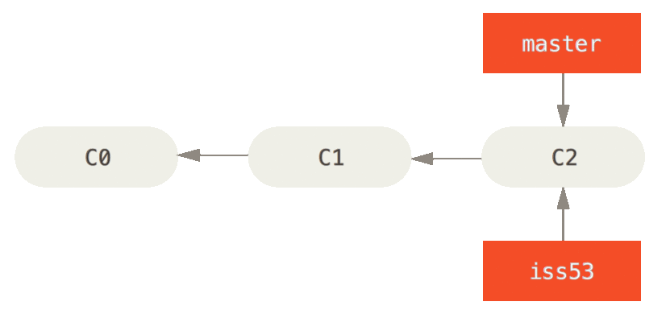
你继续在 #53 问题上工作，并且做了一些提交。 在此过程中，iss53 分支在不断的向前推进，因为你已经检出到该分支（也就是说，你的 HEAD 指针指向了 iss53 分支）：
$ vim index.html $ git commit -a -m 'added a new footer [issue 53]'
iss53 分支随着工作的进展向前推进：
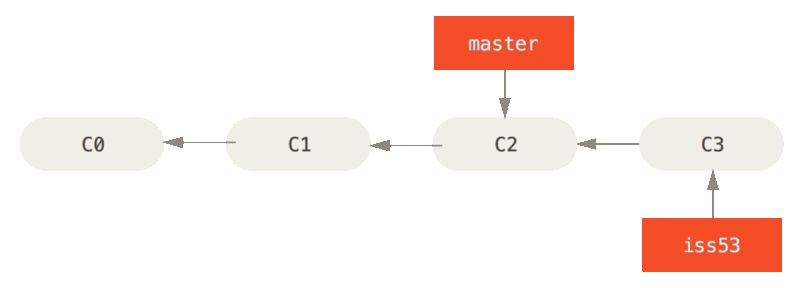
现在你接到那个电话，有个紧急问题等待你来解决。 有了 Git 的帮助，你 不必把这个紧急问题和 iss53 的修改混在一起 ，你也不需要花大力气来还原关于 53# 问题的修改，然后再添加关于这个紧急问题的修改，最后将这个修改提交到线上分支。 你所要做的仅仅是切换回 master 分支。
但是 ，在你这么做之前，要 留意你的工作目录和暂存区里那些还没有被提交的修改 ，它可能会和你即将检出的分支产生冲突从而阻止 Git 切换到该分支。 最好的方法是，在你切换分支之前，保持好一个干净的状态。 有一些 方法 可以绕过这个问题（即， 保存进度（stashing） 和 修补提交（commit amending） ），我们会在 储藏与清理 中看到关于这两个命令的介绍。
现在，我们 假设 【ME：应该先 stash】你已经把你的修改全部提交了，这时你可以切换回 master 分支了：
$ git checkout master Switched to branch 'master'
这个时候，你的工作目录和你在开始 #53 问题之前一模一样，现在你可以专心修复紧急问题了。
请牢记 ：当你切换分支的时候，Git 会重置你的工作目录，使其看起来像回到了你在那个分支上最后一次提交的样子。 Git 会自动添加、删除、修改文件以确保此时你的工作目录和这个分支最后一次提交时的样子一模一样。
接下来，你要修复这个紧急问题。 让我们建立一个针对该紧急问题的分支（hotfix branch），在该分支上工作直到问题解决：
基于 master 分支的紧急问题分支 hotfix branch：
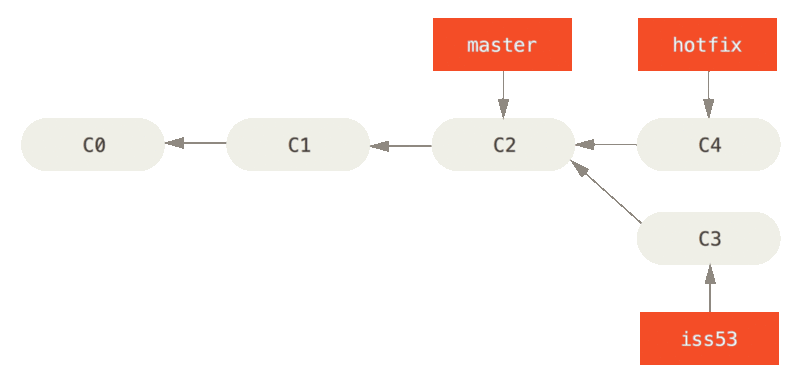
你可以运行你的测试，确保你的修改是正确的，然后将其合并回你的 master 分支来部署到线上。 你可以使用 git merge 命令来达到上述目的：
$ git checkout master $ git merge hotfix Updating f42c576..3a0874c Fast-forward index.html | 2 ++ 1 file changed, 2 insertions(+)
在合并的时候，你应该注意到了"快进（ fast-forward ）"这个词。 由于当前 master 分支所指向的提交是你当前提交（有关 hotfix 的提交）的直接上游，所以 Git 只是简单的将指针向前移动。 换句话说，当你试图合并两个分支时，如果顺着一个分支走下去能够到达另一个分支，那么 Git 在合并两者的时候，只会简单的将指针向前推进（指针右移），因为这种情况下的合并操作没有需要解决的分歧——这就叫做 “快进（fast-forward）”。
现在，最新的修改已经在 master 分支所指向的提交快照中，你可以着手发布该修复了。
master 被快进到 hotfix：
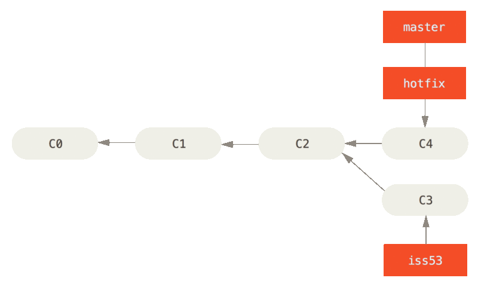
关于这个紧急问题的解决方案发布之后，你准备回到被打断之前时的工作中。 然而，你应该先删除 hotfix 分支，因为你已经不再需要它了 —— master 分支已经指向了同一个位置。 你可以使用带 -d 选项的 git branch 命令来删除分支：
$ git branch -d hotfix Deleted branch hotfix (3a0874c).
现在你可以切换回你正在工作的分支继续你的工作，也就是针对 #53 问题的那个分支（iss53 分支）。
$ git checkout iss53 Switched to branch "iss53" $ vim index.html $ git commit -a -m 'finished the new footer [issue 53]' [iss53 ad82d7a] finished the new footer [issue 53] 1 file changed, 1 insertion(+)
继续在 iss53 分支上的工作：
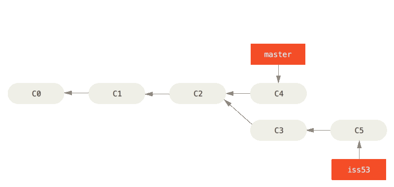
你在 hotfix 分支上所做的工作并没有包含到 iss53 分支中。 如果你需要 拉取 hotfix 所做的修改 ，你可以使用
git merge master
命令 将 master 分支合并入 iss53 分支 ，[ME: master branch doesn't exist any more? It's not special at all.] 或者你也可以等到 iss53 分支完成其使命，再将其 合并回 master 分支 。
分支的合并
假设你已经修正了 #53 问题，并且打算将你的工作合并入 master 分支。 为此，你需要 合并 iss53 分支到 master 分支 ，这和之前你合并 hotfix 分支所做的工作差不多。 你只需要 检出到你想合并入的分支，然后运行 git merge 命令 ：
$ git checkout master Switched to branch 'master' $ git merge iss53 Merge made by the 'recursive' strategy. index.html | 1 + 1 file changed, 1 insertion(+)
这和你之前合并 hotfix 分支的时候看起来有一点不一样。 在这种情况下，你的开发历史从一个更早的地方开始分叉开来（ diverged ）。 因为，master 分支所在提交并不是 iss53 分支所在提交的直接祖先，Git 不得不做一些额外的工作。 出现这种情况的时候，Git 会使用两个分支的末端所指的快照（C4 和 C5）以及这两个分支的工作祖先（C2），做一个简单的 三方合并 。
一次典型合并中所用到的三个快照：
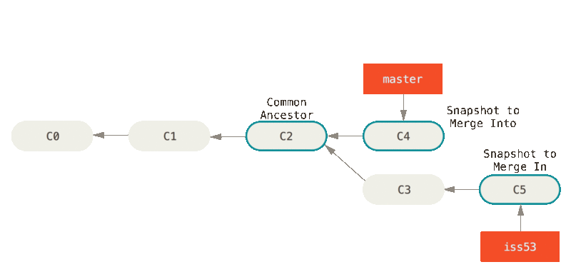
和之前将分支指针向前推进所不同的是，Git 将此次三方合并的结果做了一个新的快照并且自动创建一个新的提交指向它。 这个被称作一次 合并提交 ，它的特别之处在于他有不止一个父提交。
需要指出的是， Git 会自行决定选取哪一个提交作为最优的共同祖先 ，并以此作为合并的基础；这和更加古老的 CVS 系统或者 Subversion （1.5 版本之前）不同，在这些古老的版本管理系统中，用户需要自己选择最佳的合并基础。 Git 的这个优势使其在合并操作上比其他系统要简单很多。
既然你的修改已经合并进来了， 你已经不再需要 iss53 分支了。 现在你可以在任务追踪系统中关闭此项任务，并删除这个分支 。
$ git branch -d iss53
遇到冲突时的分支合并
有时候合并操作不会如此顺利。 如果你在两个不同的分支中，对同一个文件的同一个部分进行了不同的修改，Git 就没法干净的合并它们。 如果你对 #53 问题的修改和有关 hotfix 的修改都涉及到同一个文件的同一处，在合并它们的时候就会产生 合并冲突 ：
$ git merge iss53 Auto-merging index.html CONFLICT (content): Merge conflict in index.html Automatic merge failed; fix conflicts and then commit the result.
此时 Git 做了合并，但是没有自动地创建一个新的合并提交。 Git 会暂停下来，等待你去解决合并产生的冲突。 你可以在合并冲突后的任意时刻使用 =git status 命令来查看那些因包含合并冲突而处于 未合并（unmerged）状态 的文件：
$ git status
On branch master
You have unmerged paths.
(fix conflicts and run "git commit")
Unmerged paths:
(use "git add <file>..." to mark resolution)
both modified: index.html
no changes added to commit (use "git add" and/or "git commit -a")
任何因包含合并冲突而有待解决的文件，都会以未合并状态标识出来。 Git 会在有冲突的文件中加入标准的冲突解决标记，这样你可以打开这些包含冲突的文件然后手动解决冲突。 出现冲突的文件会包含一些特殊区段，看起来像下面这个样子：
<<<<<<< HEAD:index.html <div id="footer">contact : email.support@github.com</div> ======= <div id="footer"> please contact us at support@github.com </div> >>>>>>> iss53:index.html
这表示 HEAD 所指示的版本（也就是你的 master 分支所在的位置，因为你在运行 merge 命令的时候已经检出到了这个分支）在这个区段的上半部分（======= 的上半部分），而 iss53 分支所指示的版本在 ===== 的下半部分。 为了解决冲突，你必须选择使用由 ===== 分割的两部分中的一个，或者你也可以自行合并这些内容。 例如，你可以通过把这段内容换成下面的样子来解决冲突：
<div id="footer"> please contact us at email.support@github.com </div>
在你解决了所有文件里的冲突之后， 对每个文件使用 git add 命令来将其标记为冲突已解决 。 一旦暂存这些原本有冲突的文件，Git 就会将它们标记为冲突已解决 。
如果你想使用图形化工具来解决冲突，你可以运行 git mergetool ，该命令会为你启动一个合适的可视化合并工具，并带领你一步一步解决这些冲突：
$ git mergetool
This message is displayed because 'merge.tool' is not configured.
See 'git mergetool --tool-help' or 'git help config' for more details.
'git mergetool' will now attempt to use one of the following tools:
opendiff kdiff3 tkdiff xxdiff meld tortoisemerge gvimdiff diffuse diffmerge ecmerge p4merge araxis bc3 codecompare vimdiff emerge
Merging:
index.html
Normal merge conflict for 'index.html':
{local}: modified file
{remote}: modified file
Hit return to start merge resolution tool (opendiff):
你可以在 “下列工具中（one of the following tools）” 这句后面看到所有支持的合并工具。 然后输入你喜欢的工具名字就可以了。
提示：如果你需要更加高级的工具来解决复杂的合并冲突，我们会在 高级合并 介绍更多关于分支合并的内容。
等你退出合并工具之后，Git 会询问刚才的合并是否成功。 如果你回答是，Git 会暂存那些文件以表明冲突已解决： 你可以再次运行 git status 来确认所有的合并冲突都已被解决：
$ git status
On branch master
All conflicts fixed but you are still merging.
(use "git commit" to conclude merge)
Changes to be committed:
modified: index.html
如果你对结果感到满意，并且确定之前有冲突的的文件都已经暂存了，这时你可以输入 git commit 来完成合并提交。 默认情况下提交信息看起来像下面这个样子：
Merge branch 'iss53'
Conflicts:
index.html
#
# It looks like you may be committing a merge.
# If this is not correct, please remove the file
# .git/MERGE_HEAD
# and try again.
# Please enter the commit message for your changes. Lines starting
# with '#' will be ignored, and an empty message aborts the commit.
# On branch master
# All conflicts fixed but you are still merging.
#
# Changes to be committed:
# modified: index.html
#
如果你觉得上述的信息不够充分，不能完全体现分支合并的过程，你可以修改上述信息，添加一些细节给未来检视这个合并的读者一些帮助，告诉他们你是如何解决合并冲突的，以及理由是什么。
分支管理
现在已经创建、合并、删除了一些分支，让我们看看一些常用的分支管理工具。
git branch 命令不只是可以创建与删除分支。 如果不加任何参数运行它，会 得到当前所有分支的一个列表 ：
$ git branch iss53 * master testing
注意 master 分支前的 * 字符：它代表现在检出的那一个分支（也就是说，当前 HEAD 指针所指向的分支）。 这意味着如果在这时候提交，master 分支将会随着新的工作向前移动。
如果需要 查看每一个分支的最后一次提交 ，可以运行 git branch -v 命令：
$ git branch -v iss53 93b412c fix javascript issue * master 7a98805 Merge branch 'iss53' testing 782fd34 add scott to the author list in the readmes
–merged 与 –no-merged 这两个有用的选项可以过滤这个列表中已经合并/尚未合并到当前分支的分支。
如果要查看哪些分支已经合并到当前分支，可以运行 git branch –merged：
$ git branch --merged iss53 * master
因为之前已经合并了 iss53 分支，所以现在看到它在列表中。 在这个列表中分支名字前没有 * 号的分支通常可以使用 git branch -d 删除掉；你已经将它们的工作整合到了另一个分支，所以并不会失去任何东西。
查看所有包含未合并工作的分支 ，可以运行 git branch --no-merged ：
$ git branch --no-merged testing
这里显示了其他分支。 因为它 包含了还未合并的工作 ，尝试使用 git branch -d 命令删除它时会失败：
$ git branch -d testing error: The branch 'testing' is not fully merged. If you are sure you want to delete it, run 'git branch -D testing'.
如果真的想要删除分支并丢掉那些工作，如同帮助信息里所指出的，可以使用 -D 选项强制删除它。
分支开发工作流
在本节，我们会介绍一些常见的利用分支进行开发的工作流程。而正是由于分支管理的便捷，才衍生出这些典型的工作模式，你可以根据项目实际情况选择一种用用看。
长期分支 best_practice
在整个项目开发周期的不同阶段，你可以同时拥有多个开放的分支；你可以定期地把某些特性分支合并入其他分支中。
许多使用 Git 的开发者都喜欢使用这种方式来工作，
- 比如只在 master 分支上保留完全稳定的代码——有可能仅仅是已经发布或即将发布的代码。
- 他们还有一些名为 develop 或者 next 的平行分支，被用来做后续开发或者测试稳定性——这些分支不必保持绝对稳定，但是一旦达到稳定状态，它们就可以被合并入 master 分支了。
- 这样，在确保这些已完成的特性分支（短期分支，比如之前的 iss53 分支）能够通过所有测试，并且不会引入更多 bug 之后，就可以合并入主干分支中，等待下一次的发布。
- 一些大型项目还有一个 proposed （建议） 或 pu: proposed updates（建议更新）分支，它可能因包含一些不成熟的内容而不能进入 next 或者 master 分支。 这么做的目的是使你的分支具有不同级别的稳定性；当它们具有一定程度的稳定性后，再把它们合并入具有更高级别稳定性的分支中。 再次强调一下，使用多个长期分支的方法并非必要，但是这么做通常很有帮助，尤其是当你在一个非常庞大或者复杂的项目中工作时。
事实上我们刚才讨论的，是随着你的提交而不断右移的指针。 稳定分支的指针总是在提交历史中落后一大截，而前沿分支的指针往往比较靠前。
渐进稳定分支的线性图:
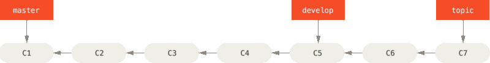
渐进稳定分支的流水线（“silo”）视图
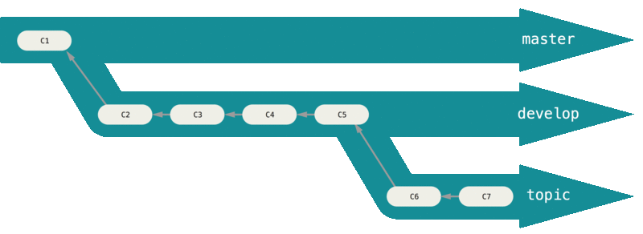
可以用这种方法维护不同层次的稳定性。
特性分支
特性分支 对任何规模的项目都适用。
特性分支是一种 短期分支 ，它被用来 实现单一特性或其相关工作 。
在 Git 中一天之内多次创建、使用、合并、删除分支都很常见。
你在上一节用到的特性分支（iss53 和 hotfix 分支）中提交了一些更新，并且在它们合并入主干分支之后，你又删除了它们。 这项技术能使你 快速并且完整地进行上下文切换（context-switch） ——因为你的工作被分散到不同的流水线中，在不同的流水线中每个分支都仅与其目标特性相关，因此，在做代码审查之类的工作的时候就能更加容易地看出你做了哪些改动。 你可以把做出的改动在特性分支中保留几分钟、几天甚至几个月， 等它们成熟之后再合并，而不用在乎它们建立的顺序或工作进度 。
例子，你在 master 分支上工作到 C1，这时为了解决一个问题而新建 iss91 分支，在 iss91 分支上工作到 C4，然而对于那个问题你又有了新的想法，于是你再新建一个 iss91v2 分支试图用另一种方法解决那个问题，接着你回到 master 分支工作了一会儿，你又冒出了一个不太确定的想法，你便在 C10 的时候新建一个 dumbidea 分支，并在上面做些实验。 你的提交历史看起来像下面这个样子（拥有多个特性分支的提交历史）：
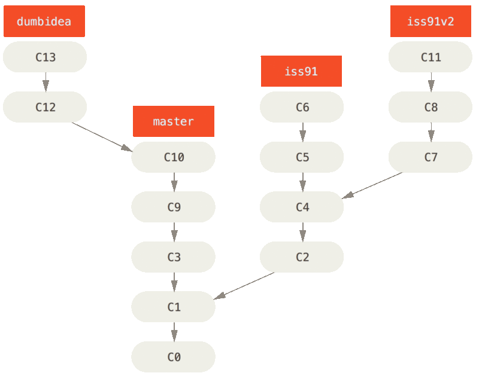
现在，我们假设两件事情：你决定使用第二个方案来解决那个问题，即用在 iss91v2 分支中的方案；另外，你将 dumbidea 分支拿给你的同事看过之后，结果发现这是个惊人之举。 这时你可以抛弃 iss91 分支（即丢弃 C5 和 C6 提交），然后把另外两个分支合并入主干分支。 最终你的提交历史看起来像下面这个样子（合并了 dumbidea 和 iss91v2 分支之后的提交历史）：
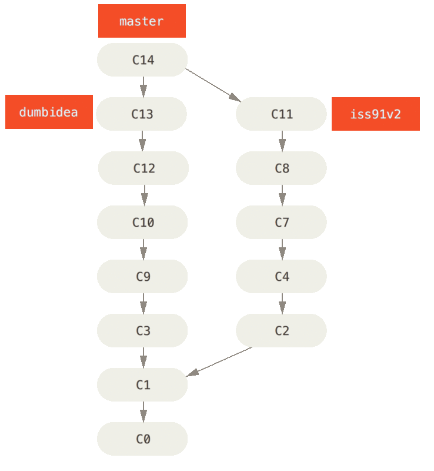
我们将会在【分布式 Git】中向你揭示更多有关分支工作流的细节，因此，请确保你阅读完那个章节之后，再来决定你的下个项目要使用什么样的分支策略（ branching scheme ）【ME：当前开发不需要分布式协作 2015/10/27）】。
请牢记，当你做这么多操作的时候，这些分支全部都存于本地。 当你新建和合并分支的时候，所有这一切都只发生在你本地的 Git 版本库中 —— 没有与服务器发生交互。
远程分支
远程引用 是对远程仓库的引用（指针），包括分支、标签等等。 你可以通过 git ls-remote (remote) 来显式地 获得远程引用的完整列表 ，或者通过 git remote show (remote) 获得远程分支的更多信息。 然而，一个 更常见的做法是利用远程跟踪分支。
远程跟踪分支 是远程分支状态的引用。 它们是 你不能移动的本地引用 ，当你做任何网络通信操作时，它们会 自动移动 。 远程跟踪分支像是你上次连接到远程仓库时，那些分支所处状态的书签 。
【ME：本节内容有关团队协作，暂略。。。】
变基（rebase）
。。。。。。
一般我们这样做的目的是为了 确保在向远程分支推送时能保持提交历史的整洁 ——例如向某个别人维护的项目贡献代码时。 在这种情况下，你首先在自己的分支里进行开发，当 开发完成时你需要先将你的代码变基到 origin/master 上，然后再向主项目提交修改 。 这样的话，该项目的 维护者就不再需要进行整合工作，只需要快进合并便可 。
请注意，无论是通过 变基 ，还是通过 三方合并 ，整合的最终结果所指向的快照始终是一样的，只不过提交历史不同罢了。 变基是将一系列提交按照原有次序依次应用到另一分支上，而合并是把最终结果合在一起。
[ME: refer to rebase]
。。。。。。
奇妙的变基也并非完美无缺，要用它得遵守一条准则：
不要对在你的仓库外有副本的分支执行变基。
。。。。。。
变基 vs. 合并
至此，你已在实战中学习了变基和合并的用法，你一定会想问，到底哪种方式更好。 在回答这个问题之前，让我们退后一步，想讨论一下提交历史到底意味着什么。
有一种观点认为，仓库的提交历史即是 记录实际发生过什么。 它是针对历史的文档，本身就有价值，不能乱改。 从这个角度看来，改变提交历史是一种亵渎，你使用谎言掩盖了实际发生过的事情。 如果由合并产生的提交历史是一团糟怎么办？ 既然事实就是如此，那么这些痕迹就应该被保留下来，让后人能够查阅。
另一种观点则正好相反，他们认为提交历史是 项目过程中发生的故事。 没人会出版一本书的第一批草稿，软件维护手册也是需要反复修订才能方便使用。 持这一观点的人会使用 rebase 及 filter-branch 等工具来编写故事，怎么方便后来的读者就怎么写。
现在，让我们回到之前的问题上来，到底合并还是变基好？希望你能明白，并没有一个简单的答案。 Git 是一个非常强大的工具，它允许你对提交历史做许多事情，但每个团队、每个项目对此的需求并不相同。 既然你已经分别学习了两者的用法，相信你能够根据实际情况作出明智的选择。
总的原则 是， 只对尚未推送或分享给别人的本地修改执行变基操作清理历史，从不对已推送至别处的提交执行变基操作 ，这样，你才能享受到两种方式带来的便利。
【ME：本节内容有关团队协作，暂略。。。】
总结
我们已经讲完了 Git 分支与合并的基础知识。 你现在应该能
- 自如地创建并切换至新分支、
- 在不同分支之间切换以及合并本地分支。
你现在应该也能【ME：以下内容除第一点以外留待以后研究】
- 通过推送你的分支至共享服务以分享它们、
- 使用共享分支与他人协作
- 以及在共享之前使用变基操作合并你的分支。
下一章，我们将要讲到，如果你想要运行自己的 Git 仓库托管服务器，你需要知道些什么。
4. 服务器上的 Git
拥有一个更稳定的公共仓库十分有用。因此，更好的合作方式是建立一个大家都可以访问的共享仓库，从那里推送和拉取数据。我们将把这个仓库称为 "Git 服务器"
远程仓库通常只是一个裸仓库（bare repository） — 即一个没有当前工作目录的仓库。因为该仓库只是一个合作媒介，仓库里存放的仅仅是 Git 的数据。简单地说，裸仓库就是你工作目录中 .git 子目录内的内容。
协议
Git 可以使用四种主要的协议来传输数据：
- 本地传输，
- SSH 协议，
- Git 协议和
- HTTP 协议。
下面分别介绍一下哪些情形应该使用（或避免使用）这些协议。
本地协议（local protocol）
最基本的就是本地协议（Local protocol），所谓的远程仓库在该协议中的表示，就是硬盘上的另一个目录。
- 这常见于团队每一个成员都对一个共享的文件系统（例如 NFS）拥有访问权，
- 或者比较少见的多人共用同一台电脑的情况。后面一种情况并不安全，因为所有代码仓库实例都储存在同一台电脑里，增加了灾难性数据损失的可能性。
克隆本地仓库
$ git clone /opt/git/project.git
Or
$ git clone file:///opt/git/project.git
如果在 URL 开头明确使用 file:// ，那么 Git 会以一种略微不同的方式运行。
添加一个本地仓库作为现有 Git 项目的远程仓库
$ git remote add local_proj /opt/git/project.git
优点
基于文件仓库的优点在于它的简单，同时保留了现存文件的权限和网络访问权限。
如果你的团队已经有一个 全体共享的文件系统 ，建立仓库就十分容易了。你只需把一份裸仓库的副本放在大家都能访问的地方，然后像对其他共享目录一样设置读写权限就可以了。我们将在下一节“在服务器上部署 Git ”中讨论如何导出一个裸仓库的副本。
缺点
这种方法的缺点是，与基本的网络连接访问相比，难以控制从不同位置来的访问权限。
如果你想从家里的笔记本电脑上推送，就要先挂载远程硬盘，这和基于网络连接的访问相比更加困难和缓慢。
另一个很重要的问题是该方法不一定就是最快的，尤其是对于共享挂载的文件系统。本地仓库只有在你对数据访问速度快的时候才快。在同一个服务器上，如果二者同时允许 Git 访问本地硬盘，通过 NFS 访问仓库通常会比 SSH 慢。
SSH 协议
Git 使用的传输协议中最常见的可能就是 SSH 了。
SSH 也是唯一一个同时支持读写操作的网络协议。另外两个网络协议（HTTP 和 Git）通常都是只读的，所以虽然二者对大多数人都可用，但执行写操作时还是需要 SSH。SSH 同时也是一个验证授权的网络协议；而因为其普遍性，一般架设和使用都很容易。
通过 SSH 克隆一个 Git 仓库
$ git clone ssh://user@server/project.git
或者不指明某个协议 — 这时 Git 会默认使用 SSH ：
$ git clone user@server:project.git
如果不指明用户，Git 会默认使用当前登录的用户名连接服务器。
优点
好处有很多:
- 首先，如果你想拥有对网络仓库的写权限，基本上不可能不使用 SSH。
- 其次，SSH 架设相对比较简单 — SSH 守护进程很常见，很多网络管理员都有一些使用经验，而且很多操作系统都自带了它或者相关的管理工具。
- 再次，通过 SSH 进行访问是安全的 — 所有数据传输都是加密和授权的。
- 最后，和 Git 及本地协议一样，SSH 也很高效，会在传输之前尽可能压缩数据。
缺点
SSH 的限制在于你不能通过它实现仓库的匿名访问。
- 即使仅为读取数据，人们也必须在能通过 SSH 访问主机的前提下才能访问仓库，这使得 SSH 不利于开源的项目。
- 如果你仅仅在公司网络里使用，SSH 可能是你唯一需要使用的协议。
- 如果想允许对项目的匿名只读访问，那么除了为自己推送而架设 SSH 协议之外，还需要支持其他协议以便他人访问读取。
Git 协议
这是一个包含在 Git 软件包中的特殊守护进程:
- 它会监听一个提供类似于 SSH 服务的特定端口（9418），而无需任何授权。
- 打算支持 Git 协议的仓库，需要先创建 git-daemon-export-ok 文件 — 它是协议进程提供仓库服务的必要条件
- 但除此之外该服务没有什么安全措施: 要么所有人都能克隆 Git 仓库，要么谁也不能。
- 这也意味着该协议通常不能用来进行推送: 你可以允许推送操作；然而由于没有授权机制，一旦允许该操作，网络上任何一个知道项目 URL 的人将都有推送权限。不用说，这是十分罕见的情况。
优点
Git 协议是现存最快的传输协议。
如果你在提供一个有很大访问量的公共项目，或者一个不需要对读操作进行授权的庞大项目，架设一个 Git 守护进程来供应仓库是个不错的选择。
它使用与 SSH 协议相同的数据传输机制，但省去了加密和授权的开销。
缺点
-Git 协议消极的一面是缺少授权机制。
用 Git 协议作为访问项目的唯一方法通常是不可取的。一般的做法是，同时提供 SSH 接口，让几个开发者拥有推送（写）权限，其他人通过 git:// 拥有只读权限。
Git 协议可能也是最难架设的协议。它要求有单独的守护进程，需要定制 — 我们将在本章的 “Gitosis” 一节详细介绍它的架设 — 需要设定 xinetd 或类似的程序，而这些工作就没那么轻松了。
该协议还要求防火墙开放 9418 端口，而企业级防火墙一般不允许对这个非标准端口的访问。大型企业级防火墙通常会封锁这个少见的端口。
HTTP/S 协议
HTTP 或 HTTPS 协议的优美之处在于架设的简便性。基本上，只需要把 Git 的裸仓库文件放在 HTTP 的根目录下，配置一个特定的 post-update 挂钩（hook）就可以搞定（Git 挂钩的细节见第 7 章）。此后，每个能访问 Git 仓库所在服务器上 web 服务的人都可以进行克隆操作。
通过 HTTP 对仓库进行读取
下面的操作可以允许通过 HTTP 对仓库进行读取：
$ cd /var/www/htdocs/ $ git clone --bare /path/to/git_project gitproject.git $ cd gitproject.git $ mv hooks/post-update.sample hooks/post-update $ chmod a+x hooks/post-update
这样就可以了。Git 附带的 post-update 挂钩会默认运行合适的命令（ git update-server-info ）来确保通过 HTTP 的获取和克隆正常工作。这条命令在你用 SSH 向仓库推送内容时运行.
本例中，我们使用了 Apache 设定中常用的 /var/www/htdocs 路径，不过你可以使用任何静态 web 服务 — 把裸仓库放在它的目录里就行。 Git 的数据是以最基本的静态文件的形式提供的（关于如何提供文件的详情见第 9 章）。
克隆仓库
$ git clone http://example.com/gitproject.git
进行推送操作
通过 HTTP 进行推送操作也是可能的，不过这种做法不太常见，并且牵扯到复杂的 WebDAV 设定。
如果对 HTTP 推送协议感兴趣，不妨打开这个地址看一下操作方法：http://www.kernel.org/pub/software/scm/git/docs/howto/setup-git-server-over-http.txt 。通过 HTTP 推送的好处之一是你可以使用任何 WebDAV 服务器，不需要为 Git 设定特殊环境；所以如果主机提供商支持通过 WebDAV 更新网站内容，你也可以使用这项功能。
优点
易于架设。几条必要的命令就可以让全世界读取到仓库的内容。花费不过几分钟。HTTP 协议不会占用过多服务器资源。因为它一般只用到静态的 HTTP 服务提供所有数据，普通的 Apache 服务器平均每秒能支撑数千个文件的并发访问
可以通过 HTTPS 提供只读的仓库，这意味着你可以加密传输内容；你甚至可以要求客户端使用特定签名的 SSL 证书。一般情况下，如果到了这一步，使用 SSH 公共密钥可能是更简单的方案；不过也存在一些特殊情况，这时通过 HTTPS 使用带签名的 SSL 证书或者其他基于 HTTP 的只读连接授权方式是更好的解决方案。
HTTP 还有个额外的好处：HTTP 是一个如此常见的协议，以至于企业级防火墙通常都允许其端口的通信。
缺点
相对来说客户端效率更低。克隆或者下载仓库内容可能会花费更多时间，而且 HTTP 传输的体积和网络开销比其他任何一个协议都大。因为它没有按需供应的能力 — 传输过程中没有服务端的动态计算 — 因而 HTTP 协议经常会被称为 傻瓜（dumb） 协议。更多 HTTP 协议和其他协议效率上的差异见第 9 章。
在服务器上部署 Git [ME: omitted]
把裸仓库移到服务器上
小型安装
生成 SSH 公钥
架设服务器
公共访问
GitWeb
如果能有一个简单的 web 界面访问就更好。Git 自带一个叫做 GitWeb 的 CGI 脚本，运行效果可以到 http://git.kernel.org 这样的站点体验下
Gitosis
把所有用户的公钥保存在 authorizedkeys 文件的做法，只能凑和一阵子，当用户数量达到几百人的规模时，管理起来就会十分痛苦。每次改删用户都必须登录服务器不去说，这种做法还缺少必要的权限管理 — 每个人都对所有项目拥有完整的读写权限。
幸好我们还可以选择应用广泛的 Gitosis 项目。简单地说，Gitosis 就是一套用来管理 authorizedkeys 文件和实现简单连接限制的脚本。有趣的是，用来添加用户和设定权限的并非通过网页程序，而只是管理一个特殊的 Git 仓库。你只需要在这个特殊仓库内做好相应的设定，然后推送到服务器上，Gitosis 就会随之改变运行策略
Gitolite
Gitolite是在Git之上的一个授权层，依托sshd或者httpd来进行认证。（概括：认证是确定用户是谁，授权是决定该用户是否被允许做他想做的事情）。
Gitolite允许你定义访问许可而不只作用于仓库，而同样于仓库中的每个branch和tag name。你可以定义确切的人(或一组人)只能push特定的"refs"(或者branches或者tags)而不是其他人。
Git 守护进程
Git 托管服务
网络上有几个专业的仓库托管服务可供选择。这样做有几大优点：
- 托管账户的建立通常比较省时，
- 方便项目的启动，
- 而且不涉及服务器的维护和监控。
即使内部创建并运行着自己的服务器，同时为开源项目提供一个公共托管站点还是有好处的 — 让开源社区更方便地找到该项目，并给予帮助。
可供选择的托管服务数量繁多，各有利弊。在 Git 官方 wiki 上的 Githosting 页面有一个最新的托管服务列表：https://git.wiki.kernel.org/index.php/GitHosting
GitHub
GitHub 和大多数的代码托管站点在处理项目命名空间的方式上略有不同。GitHub 的设计更侧重于用户，而不是完全基于项目。也就是说，如果我在 GitHub 上托管一个名为 grit 的项目的话，它的地址不会是 github.com/grit，而是按在用户底下 github.com/shacon/grit （译注：本书作者 Scott Chacon 在 GitHub 上的用户名是 shacon。）。不存在所谓某个项目的官方版本，所以假如第一作者放弃了某个项目，它可以无缝转移到其它用户的名下。
GitHub 同时也是一个向使用私有仓库的用户收取费用的商业公司，但任何人都可以方便快捷地申请到一个免费账户，并在上面托管数量不限的开源项目。
接下来我们快速介绍一下 GitHub 的基本使用。
建立新账户
如果方便，现在就可以提供你的 SSH 公钥。我们在前文的"小型安装" 一节介绍过生成新公钥的方法。把新生成的公钥复制粘贴到 SSH Public Key 文本框中即可。要是对生成公钥的步骤不太清楚，也可以点击 "explain ssh keys" 链接，会显示各个主流操作系统上完成该步骤的介绍。
建立新仓库
由于尚未提交代码，点击项目地址后 GitHub 会显示一个简要的指南，告诉你如何新建一个项目并推送上来，如何从现有项目推送，以及如何从一个公共的 Subversion 仓库导入项目
对于新的项目，需要先在本地初始化为 Git 项目，添加要管理的文件并作首次提交：
$ git init $ git add . $ git commit -m 'initial commit'
然后在这个本地仓库内把 GitHub 添加为远程仓库，并推送 master 分支上来：
$ git remote add origin git@github.com:testinguser/iphone_project.git $ git push origin master
现在该项目就托管在 GitHub 上了。你可以把它的 URL 分享给每位对此项目感兴趣的人。本例的 URL 是 http://github.com/testinguser/iphone_project%E3%80%82%E8%80%8C%E5%9C%A8%E9%A1%B9%E7%9B%AE%E9%A1%B5%E9%9D%A2%E7%9A%84%E6%91%98%E8%A6%81%E9%83%A8%E5%88%86%EF%BC%8C%E4%BD%A0%E4%BC%9A%E5%8F%91%E7%8E%B0%E6%9C%89%E4%B8%A4%E4%B8%AA Git URL 地址:
- Public Clone URL 是一个公开的，只读的 Git URL，任何人都可以通过它克隆该项目。可以随意散播这个 URL，比如发布到个人网站之类的地方等等。
- Your Clone URL 是一个基于 SSH 协议的可读可写 URL，只有使用与上传的 SSH 公钥对应的密钥来连接时，才能通过它进行读写操作。其他用户访问该项目页面时只能看到之前那个公共的 URL，看不到这个私有的 URL。
从 Subversion 导入项目
如果想把某个公共 Subversion 项目导入 Git，GitHub 可以帮忙。在指南的最后有一个指向导入 Subversion 页面的链接。点击它会看到一个表单，包含有关导入流程的信息以及一个用来粘贴公共 Subversion 项目连接的文本框.
如果项目很大，采用非标准结构，或者是私有的，那就无法借助该工具实现导入。到第 7 章，我们会介绍如何手工导入复杂工程的具体方法。
添加协作开发者
现在把团队里的其他人也加进来。如果 John，Josie 和 Jessica 都在 GitHub 注册了账户，要赋予他们对该仓库的推送权限，可以把他们加为项目协作者。这样他们就可以通过各自的公钥访问我的这个仓库了。
点击项目页面上方的 "edit" 按钮或者顶部的 Admin 标签，进入该项目的管理页面
如果要取消某人的访问权，点击 "revoke" 即可取消他的推送权限。对于将来的项目，你可以从现有项目复制协作者名单，或者直接借用协作者群组。
项目页面
在推送或从 Subversion 导入项目之后，你会看到一个类似图 4-13 的项目主页：
派生项目
如果要为一个自己没有推送权限的项目贡献代码，GitHub 鼓励使用派生（fork）。到那个感兴趣的项目主页上，点击页面上方的 "fork" 按钮，GitHub 就会为你复制一份该项目的副本到你的仓库中，这样你就可以向自己的这个副本推送数据了。几秒钟之后，你将进入新建的项目页面，会显示该项目派生自哪一个项目
关于 GitHub
就先介绍这么多，能够快速达成这些事情非常重要（译注：门槛的降低和完成基本任务的简单高效，对于推动开源项目的协作发展有着举足轻重的意义。）。短短几分钟内，你就能创建一个新账户，添加一个项目并开始推送。如果项目是开源的，整个庞大的开发者社区都可以立即访问它，提供各式各样的帮助和贡献。最起码，这也是一种 Git 新手立即体验尝试 Git 的捷径。
小结
我们讨论并介绍了一些建立远程 Git 仓库的方法，接下来你可以通过这些仓库同他人分享或合作。
运行自己的服务器意味着更多的控制权以及在防火墙内部操作的可能性，当然这样的服务器通常需要投入一定的时间精力来架设维护。如果直接托管，虽然能免去这部分工作，但有时出于安全或版权的考虑，有些公司禁止将商业代码托管到第三方服务商。
所以究竟采取哪种方案，并不是个难以取舍的问题，或者其一，或者相互配合，哪种合适就用哪种。
5. 分布式 Git
为了便于项目中的所有开发者分享代码，我们准备好了一台服务器存放远程 Git 仓库。经过前面几章的学习，我们已经学会了一些基本的本地工作流程中所需用到的命令。接下来，我们要学习下如何利用 Git 来组织和完成分布式工作流程。
分布式工作流程
同传统的集中式版本控制系统（CVCS）不同，开发者之间的协作方式因着 Git 的分布式特性而变得更为灵活多样。在集中式系统上，每个开发者就像是连接在集线器上的节点，彼此的工作方式大体相像。而在 Git 网络中，每个开发者同时扮演着节点和集线器的角色，这就是说，每一个开发者都可以将自己的代码贡献到另外一个开发者的仓库中，或者建立自己的公共仓库，让其他开发者基于自己的工作开始，为自己的仓库贡献代码。于是，Git 的分布式协作便可以衍生出种种不同的工作流程，我会在接下来的章节介绍几种常见的应用方式，并分别讨论各自的优缺点。你可以选择其中的一种，或者结合起来，应用到你自己的项目中。
集中式工作流
通常，集中式工作流程使用的都是单点协作模型。一个存放代码仓库的中心服务器，可以接受所有开发者提交的代码。所有的开发者都是普通的节点，作为中心集线器的消费者，平时的工作就是和中心仓库同步数据.
如果两个开发者从中心仓库克隆代码下来，同时作了一些修订，那么 只有第一个开发者 可以顺利地把数据推送到共享服务器。第二个开发者在提交他的修订之前，必须 先下载合并服务器上的数据，解决冲突之后 才能推送数据到共享服务器上。在 Git 中这么用也决无问题，这就好比是在用 Subversion（或其他 CVCS）一样，可以很好地工作。
如果你的 团队不是很大 ，或者大家都已经习惯了使用集中式工作流程，完全可以采用这种简单的模式。只需要配置好一台中心服务器，并给每个人推送数据的权限，就可以开展工作了。但如果提交代码时有冲突， Git 根本就不会让用户覆盖他人代码，它直接驳回第二个人的提交操作。这就等于告诉提交者，你所作的修订无法通过快进（fast-forward）来合并，你必须先拉取最新数据下来，手工解决冲突合并后，才能继续推送新的提交。 绝大多数人都熟悉和了解这种模式的工作方式，所以使用也非常广泛。
集成管理员工作流
由于 Git 允许使用多个远程仓库，开发者便可以建立自己的公共仓库，往里面写数据并共享给他人，而同时又可以从别人的仓库中提取他们的更新过来。这种情形通常都会有个代表着官方发布的项目仓库（ blessed repository ），开发者们由此仓库克隆出一个自己的公共仓库（ developer public ），然后将自己的提交推送上去，请求官方仓库的维护者拉取更新合并到主项目。维护者在自己的本地也有个克隆仓库（ integration manager ），他可以将你的公共仓库作为远程仓库添加进来，经过测试无误后合并到主干分支，然后再推送到官方仓库。
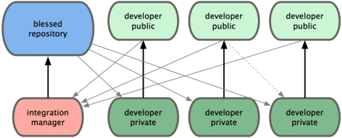
工作流程看起来就像图 5-2 所示:
- 项目维护者 可以推送数据到公共仓库 blessed repository。
- 贡献者 克隆此仓库，修订或编写新代码。
- 贡献者 推送数据到自己的公共仓库 developer public。
- 贡献者 给 维护者 发送邮件，请求拉取自己的最新修订。
- 维护者 在自己本地的 integration manger 仓库中，将 贡献者 的仓库加为远程仓库，合并更新并做测试。
- 维护者 将合并后的更新推送到主仓库 blessed repository。
在 GitHub 网站上使用得 最多 的就是这种工作流。人们可以复制（fork 亦即克隆）某个项目到自己的列表中，成为自己的公共仓库。随后将自己的更新提交到这个仓库，所有人都可以看到你的每次更新。这么做最主要的优点在于，你可以按照自己的节奏继续工作，而不必等待维护者处理你提交的更新；而维护者也可以按照自己的节奏，任何时候都可以过来处理接纳你的贡献。
司令官与副官工作流
这其实是上一种工作流的变体。一般超大型的项目才会用到这样的工作方式，像是拥有数百协作开发者的 Linux 内核项目就是如此。各个集成管理员分别负责集成项目中的特定部分，所以称为副官（ lieutenant ）。而所有这些集成管理员头上还有一位负责统筹的总集成管理员，称为司令官（ dictator ）。司令官维护的仓库用于提供所有协作者拉取最新集成的项目代码。
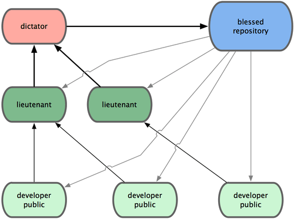
整个流程看起来如图 5-3 所示：- 一般的开发者在自己的特性分支上工作，并不定期地根据主干分支（dictator 上的 master）衍合。
- 副官（lieutenant）将普通开发者的特性分支合并到自己的 master 分支中。
- 司令官（dictator）将所有副官的 master 分支并入自己的 master 分支。
- 司令官（dictator）将集成后的 master 分支推送到共享仓库 blessed repository 中，以便所有其他开发者以此为基础进行衍合。
这种工作流程并不常用，只有当项目极为庞杂，或者需要多级别管理时，才会体现出优势。利用这种方式，项目总负责人（即司令官）可以把大量分散的集成工作委托给不同的小组负责人分别处理，最后再统筹起来，如此各人的职责清晰明确，也不易出错（译注：此乃分而治之）。
工作流程总结
以上介绍的是常见的分布式系统可以应用的工作流程，当然不止于 Git。在实际的开发工作中，你可能会遇到各种为了满足特定需求而有所变化的工作方式。
为项目作贡献
作为项目贡献者，会有哪些常见的工作模式。
每个项目的具体情况又多少会有些不同，比如说参与者的规模，所选择的工作流程，每个人的提交权限，以及 Git 以外贡献等等，都会影响到具体操作的细节。
首当其冲的是 参与者规模 。项目中有多少开发者是经常提交代码的？经常又是多久呢？大多数两至三人的小团队，一天大约只有几次提交，如果不是什么热门项目的话就更少了。可要是在大公司里，或者大项目中，参与者可以多到上千，每天都会有十几个上百个补丁提交上来。这种差异带来的影响是显著的，越是多的人参与进来，就越难保证每次合并正确无误。你正在工作的代码，可能会因为合并进来其他人的更新而变得过时，甚至受创无法运行。而已经提交上去的更新，也可能在等着审核合并的过程中变得过时。那么，我们该怎样做才能确保代码是最新的，提交的补丁也是可用的呢？
接下来便是项目所采用的 工作流 。是集中式的，每个开发者都具有等同的写权限？项目是否有专人负责检查所有补丁？是不是所有补丁都做过同行复阅（peer-review）再通过审核的？你是否参与审核过程？如果使用副官系统，那你是不是限定于只能向此副官提交？
还有你的 提交权限 。有或没有向主项目提交更新的权限，结果完全不同，直接决定最终采用怎样的工作流。如果不能直接提交更新，那该如何贡献自己的代码呢？是不是该有个什么策略？你每次贡献代码会有多少量？提交频率呢？
所有以上这些问题都会或多或少影响到最终采用的工作流。
提交指南 git commit submit guide
开始分析特定用例之前，先来了解下 如何撰写提交说明 。一份好的提交指南可以帮助协作者更轻松更有效地配合。Git 项目本身就提供了一份文档（Git 项目源代码目录中 Documentation/SubmittingPatches），列数了大量提示，从如何编撰提交说明到提交补丁，不一而足。
首先，请 不要在更新中提交多余的白字符（whitespace） 。Git 有种检查此类问题的方法，在提交之前，先运行 git diff --check ，会把可能的多余白字符修正列出来。在提交之前你就可以看到这类问题，及时解决以免困扰其他开发者。
接下来， 请将每次提交限定于完成一次逻辑功能 。并且可能的话，适当地分解为多次小更新，以便每次小型提交都更易于理解。请不要在周末穷追猛打一次性解决五个问题，而最后拖到周一再提交。就算是这样也请 尽可能利用暂存区域，将之前的改动分解为每次修复一个问题，再分别提交和加注说明 。如果 针对两个问题改动的是同一个文件 ，可以试试看 git add --patch 的方式将部分内容置入暂存区域（我们会在 [第六章] 再详细介绍）。无论是五次小提交还是混杂在一起的大提交，最终分支末端的项目快照应该还是一样的，但分解开来之后，更便于其他开发者复阅。这么做也方便自己将来取消某个特定问题的修复。我们将在 [第六章] 介绍一些 重写提交历史 ， 同暂存区域交互 的技巧和工具，以便最终得到一个干净有意义，且易于理解的提交历史。
最后需要谨记的是 提交说明 的撰写。写得好可以让大家协作起来更轻松。一般来说，提交说明最好限制在 一行以内，50 个字符以下 ，简明扼要地描述更新内容，空开一行后，再展开详细注解。Git 项目本身需要开发者撰写详尽注解，包括本次修订的因由，以及前后不同实现之间的比较，我们也该借鉴这种做法。另外，提交说明应该用 祈使现在式语态 ，比如，不要说成 “I added tests for” 或 “Adding tests for” 而应该用 “Add tests for”。 下面是来自 tpope.net 的 Tim Pope 原创的 提交说明格式模版 ，供参考：
本次更新的简要描述（50 个字符以内） 如果必要，此处展开详尽阐述。段落宽度限定在 72 个字符以内。 某些情况下，第一行的简要描述将用作邮件标题，其余部分作为邮件正文。 其间的空行是必要的，以区分两者（当然没有正文另当别论）。 如果并在一起，rebase 这样的工具就可能会迷惑。 另起空行后，再进一步补充其他说明。 - 可以使用这样的条目列举式。 - 一般以单个空格紧跟短划线或者星号作为每项条目的起始符。每个条目间用一空行隔开。 不过这里按自己项目的约定，可以略作变化。
如果你的提交说明都用这样的格式来书写，好多事情就可以变得十分简单。Git 项目本身就是这样要求的，我强烈建议你到 Git 项目仓库下运行 git log --no-merges 看看，所有提交历史的说明是怎样撰写的。（译注：如果现在还没有克隆 git 项目源代码，是时候 git clone git://git.kernel.org/pub/scm/git/git.git 了。）
私有的小型团队 git workflow example important pragmatic
从最简单的情况开始，一个私有项目，与你一起协作的还有另外一到两位开发者。这里说私有，是指源代码不公开，其他人无法访问项目仓库。而你和其他开发者则都具有推送数据到仓库的权限。
让我们来看看，两个开发者一起使用同一个共享仓库，会发生些什么。
第一个人，John，克隆了仓库，作了些更新，在本地提交。
# John's Machine $ git clone john@githost:simplegit.git Initialized empty Git repository in /home/john/simplegit/.git/ ... $ cd simplegit/ $ vim lib/simplegit.rb $ git commit -am 'removed invalid default value' [master 738ee87] removed invalid default value 1 files changed, 1 insertions(+), 1 deletions(-)
第二个开发者，Jessica，一样这么做：克隆仓库，提交更新：
# Jessica's Machine $ git clone jessica@githost:simplegit.git Initialized empty Git repository in /home/jessica/simplegit/.git/ ... $ cd simplegit/ $ vim TODO $ git commit -am 'add reset task' [master fbff5bc] add reset task 1 files changed, 1 insertions(+), 0 deletions(-)
现在，Jessica 将她的工作推送到服务器上：
# Jessica's Machine $ git push origin master ... To jessica@githost:simplegit.git 1edee6b..fbff5bc master -> master
John 也尝试推送自己的工作上去：
# John's Machine $ git push origin master To john@githost:simplegit.git ! [rejected] master -> master (non-fast forward) error: failed to push some refs to 'john@githost:simplegit.git'
John 的推送操作被驳回，因为 Jessica 已经推送了新的数据上去。请注意，特别是你用惯了 Subversion 的话，这里其实修改的是两个文件，而不是同一个文件的同一个地方。Subversion 会 在服务器端自动合并 提交上来的更新，而 Git 则必须先在本地合并后 才能推送。于是，John 不得不先把 Jessica 的更新拉下来：
$ git fetch origin ... From john@githost:simplegit + 049d078...fbff5bc master -> origin/master
此刻，John 的本地仓库如图 5-4 所示：
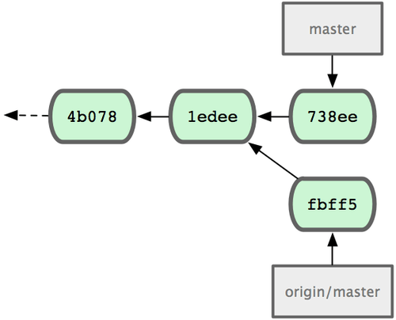
虽然 John 下载了 Jessica 推送到服务器的最近更新（fbff5），但目前只是 origin/master 指针指向它，而当前的本地分支 master 仍然指向自己的更新（738ee），所以需要先把她的提交合并过来，才能继续推送数据：
$ git merge origin/master Merge made by recursive. TODO | 1 + 1 files changed, 1 insertions(+), 0 deletions(-)
还好，合并过程非常顺利，没有冲突，现在 John 的提交历史如图 5-5 所示：
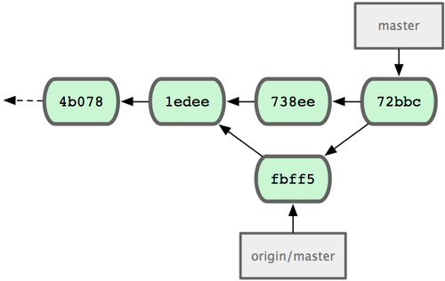
现在，John 应该 再测试一下代码是否仍然正常工作 ，然后将合并结果（72bbc）推送到服务器上：
$ git push origin master ... To john@githost:simplegit.git fbff5bc..72bbc59 master -> master
最终，John 的提交历史变为图 5-6 所示：
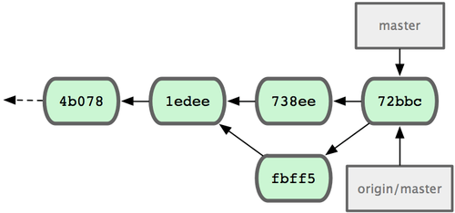
而在这段时间，Jessica 已经开始在另一个特性分支工作了。她创建了 issue54 并提交了三次更新。她还没有下载 John 提交的合并结果，所以提交历史如图 5-7 所示：
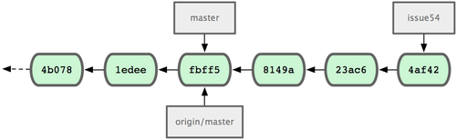
Jessica 想要先和服务器上的数据同步，所以先下载数据：
# Jessica's Machine $ git fetch origin ... From jessica@githost:simplegit fbff5bc..72bbc59 master -> origin/master
于是 Jessica 的本地仓库历史多出了 John 的两次提交（738ee 和 72bbc），如图 5-8 所示：
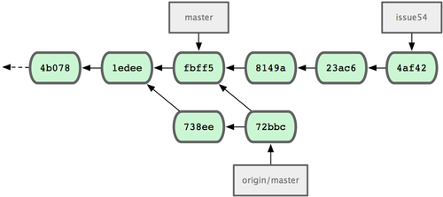
此时，Jessica 在特性分支上的工作已经完成，但她想在推送数据之前，先确认下要并进来的数据究竟是什么，于是运行 git log 查看：
$ git log --no-merges issue54..origin/master commit 738ee872852dfaa9d6634e0dea7a324040193016 Author: John Smith <jsmith@example.com> Date: Fri May 29 16:01:27 2009 -0700 removed invalid default value
issue54..origin/master 语法是一个 日志过滤器 ，要求 Git 只显示所有在后面分支（在本例中是 origin/master）但不在前面分支（在本例中是 issue54）的提交的列表。 我们将会在 提交区间 中详细介绍这个语法。
目前，我们可以从输出中看到有一个 John 生成的但是 Jessica 还没有合并入的提交。 如果她合并 origin/master，也就是说将会修改她的本地工作的那个单个提交。
现在，Jessica 可以 将特性分支上的工作并到 master 分支 ，然后 再并入 John 的工作（origin/master）到自己的 master 分支 ， 最后再推送回服务器 。当然，得 先切回主分支才能集成所有数据 ：
$ git checkout master Switched to branch "master" Your branch is behind 'origin/master' by 2 commits, and can be fast-forwarded.
要合并 origin/master 或 issue54 分支，谁先谁后都没有关系，因为它们都在 上游（upstream） （译注：想像分叉的更新像是汇流成河的源头，所以上游 upstream 是指最新的提交），所以无所谓先后顺序，最终合并后的内容快照都是一样的，而仅是提交历史看起来会有些先后差别。Jessica 选择先合并 issue54：
$ git merge issue54 Updating fbff5bc..4af4298 Fast forward README | 1 + lib/simplegit.rb | 6 +++++- 2 files changed, 6 insertions(+), 1 deletions(-)
正如所见，没有冲突发生，仅是一次简单快进。现在 Jessica 开始合并 John 的工作（origin/master）：
$ git merge origin/master Auto-merging lib/simplegit.rb Merge made by recursive. lib/simplegit.rb | 2 +- 1 files changed, 1 insertions(+), 1 deletions(-)
所有的合并都非常干净。现在 Jessica 的提交历史如图 5-9 所示：
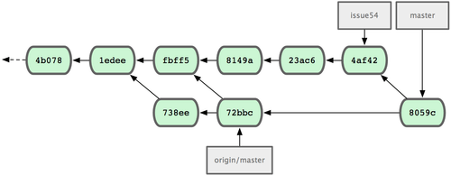
现在 Jessica 已经可以在自己的 master 分支中访问 origin/master 的最新改动了，所以她应该可以成功推送最后的合并结果到服务器上（假设 John 此时没再推送新数据上来）：
$ git push origin master ... To jessica@githost:simplegit.git 72bbc59..8059c15 master -> master
至此，每个开发者都提交了若干次，且成功合并了对方的工作成果，最新的提交历史如图 5-10 所示：
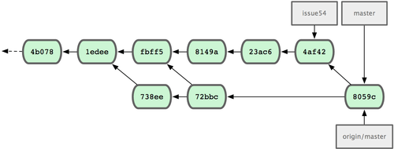
以上就是 最简单的协作方式之一 ：先在自己的特性分支中工作一段时间，完成后合并到自己的 master 分支；然后下载合并 origin/master 上的更新（如果有的话），再推回远程服务器。一般的协作流程如图 5-11 所示：

私有团队间协作 (更大规模的私有团队协作)
在接下来的情形中，你会看到大型私有团队中贡献者的角色。 在你将学习到的这种工作环境中，小组 基于特性 进行协作，这些团队的贡献将会由 其他人整合 。
假设 John 与 Jessica 在一个特性 (featureA) 上工作，同时 Jessica 与 Josie 在第二个特性 (featureB) 上工作。 在本例中，公司使用了一种 整合-管理者工作流程 ， 独立小组的工作 只能被特定的工程师 整合 ， 主仓库的 master 分支 只能被那些工程师 更新 。 在这种情况下，所有的工作都是在基于团队的分支上完成的并且稍后会被整合者拉到一起。
因为 Jessica 在两个特性上工作，并且平行地与两个不同的开发者协作，让我们跟随她的工作流程。 假设她已经克隆了仓库，首先决定在 featureA 上工作。 她为那个特性创建了一个新分支然后在那做了一些工作：
# Jessica's Machine $ git checkout -b featureA Switched to a new branch 'featureA' $ vim lib/simplegit.rb $ git commit -am 'add limit to log function' [featureA 3300904] add limit to log function 1 files changed, 1 insertions(+), 1 deletions(-)
在这个时候，她需要将工作共享给 John，所以她推送了 featureA 分支的提交到服务器上。 Jessica 没有 master 分支 的推送权限 - 只有整合者有 - 所以为了与 John 协作必须推送另一个分支。
$ git push -u origin featureA ... To jessica@githost:simplegit.git * [new branch] featureA -> featureA
[ME: refer to push a branch and automatically set tracking about the option -u. Here it means "pushes the 'featureA' branch to 'origin' remote and sets up tracking" (should be used together with setting the configuration option by using git config --global push.default tracking to limit this behavior to just the current path)]
Jessica 向 John 发邮件告诉他已经推送了一些工作到 featureA 分支现在可以看一看。 当她等待 John 的反馈时，Jessica 决定与 Josie 开始在 featureB 上工作。 为了开始工作，她基于服务器的 master 分支开始了一个新分支。
# Jessica's Machine $ git fetch origin $ git checkout -b featureB origin/master Switched to a new branch 'featureB'
然后，Jessica 在 featureB 分支上创建了几次提交：
$ vim lib/simplegit.rb $ git commit -am 'made the ls-tree function recursive' [featureB e5b0fdc] made the ls-tree function recursive 1 files changed, 1 insertions(+), 1 deletions(-) $ vim lib/simplegit.rb $ git commit -am 'add ls-files' [featureB 8512791] add ls-files 1 files changed, 5 insertions(+), 0 deletions(-)
现在，Jessica 的仓库看起来像这样：
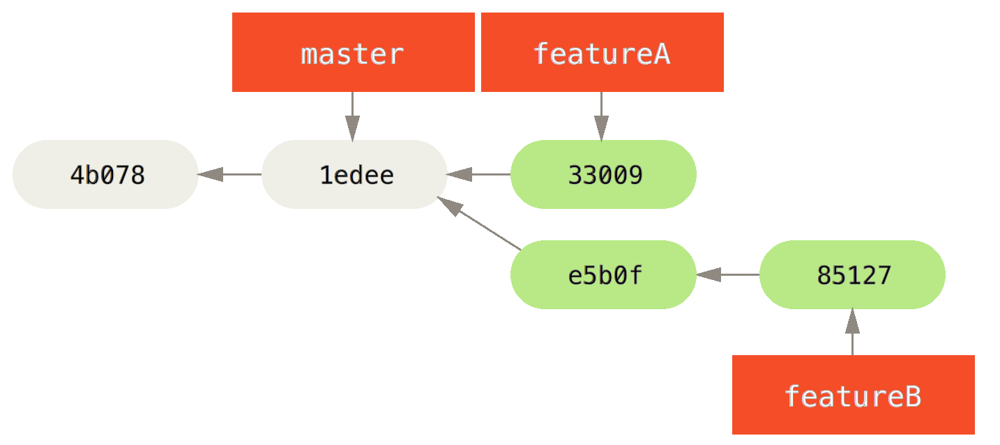
她准备好推送工作了，但是一封来自 Josie 的邮件告知一些初始工作已经被推送到服务器上的 featureBee 上了。 Jessica 在能推送到服务器前首先需要将那些改动与她自己的合并。 然后她可以 通过 git fetch 抓取 Josie 的改动 ：
$ git fetch origin ... From jessica@githost:simplegit * [new branch] featureBee -> origin/featureBee
Jessica 现在可以通过 git merge 将其合并到她做的工作中：
$ git merge origin/featureBee Auto-merging lib/simplegit.rb Merge made by recursive. lib/simplegit.rb | 4 ++++ 1 files changed, 4 insertions(+), 0 deletions(-)
有点儿 问题 - 她需要将在 featureB 分支上合并的工作 推送 到服务器上的 featureBee 分支。 她可以通过指定本地分支加上冒号（:）加上远程分支给 git push 命令来这样做：
$ git push -u origin featureB:featureBee ... To jessica@githost:simplegit.git fba9af8..cd685d1 featureB -> featureBee
这称作一个 引用规格 。 查看 引用规格 了解关于 Git 引用规格与通过它们可以做的不同的事情的详细讨论。 也要注意 -u 标记；这是 --set-upstream 的简写，该标记会为之后轻松地推送与拉取配置分支。
紧接着，John 发邮件给 Jessica 说他已经推送了一些改动到 featureA 分支并要求她去 验证 它们。 她运行一个 git fetch 来拉取下那些改动：
$ git fetch origin ... From jessica@githost:simplegit 3300904..aad881d featureA -> origin/featureA
通过 git log 她可以看到哪些发生了改变：
$ git log featureA..origin/featureA
commit aad881d154acdaeb2b6b18ea0e827ed8a6d671e6
Author: John Smith <jsmith@example.com>
Date: Fri May 29 19:57:33 2009 -0700
changed log output to 30 from 25
最终，她合并 John 的工作到她自己的 featureA 分支：
$ git checkout featureA Switched to branch 'featureA' $ git merge origin/featureA Updating 3300904..aad881d Fast forward lib/simplegit.rb | 10 +++++++++- 1 files changed, 9 insertions(+), 1 deletions(-)
Jessica 想要轻微调整一些东西，所以她再次提交然后将其推送回服务器：
$ git commit -am 'small tweak' [featureA 774b3ed] small tweak 1 files changed, 1 insertions(+), 1 deletions(-) $ git push ... To jessica@githost:simplegit.git 3300904..774b3ed featureA -> featureA
[ME: git commit -a means git commit --all, note that -a only commit all changed files (not the new and deleted files) (resource, or git help commit)]
Jessica 的提交历史现在看起来像这样：
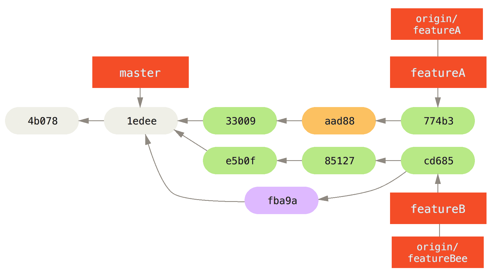
Jessica、Josie 与 John 通知 整合者 在服务器上的 featureA 与 featureBee 分支准备好 整合到主线 中了。 在整合者合并这些分支到主线后，一次抓取会拿下来一个 新的合并提交 ，使历史看起来像这样：
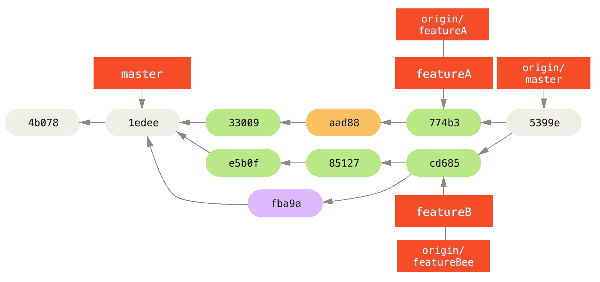
许多团队切换到 Git 是因为这一 允许多个团队并行工作、并在之后合并不同工作 的能力。 团队中更小一些的 子小组可以通过远程分支协作而不必影响或妨碍整个团队 的能力是 Git 的一个 巨大优势 。 在这儿看到的工作流程顺序类似这样：
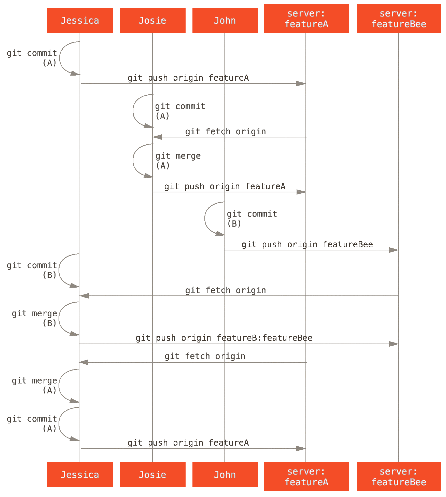
派生的公开项目 [ME: omitted]
总结
这个部分介绍了处理可能会遇到的几个迥然不同类型的 Git 项目的一些常见的工作流程，介绍了帮助管理这个过程的一些新工具。 接下来，你会了解到如何在贡献的另一面工作：维护一个 Git 项目。 你将会学习如何成为一个 仁慈的独裁者 或 整合管理者 。
6. GitHub [ME: omitted]
账户的创建和配置
对项目做出贡献
维护项目
管理组织
脚本 GitHub
总结
7. Git 工具
现在，你已经学习了管理或者维护 Git 仓库、实现代码控制所需的大多数日常命令和工作流程。 你已经尝试了跟踪和提交文件的基本操作，并且发挥了暂存区和轻量级的分支及合并的威力。
选择修订版本
Git 允许你通过几种方法来指明特定的或者一定范围内的提交。
单个修订版本
简短的 SHA-1
分支引用
引用日志
祖先引用
提交区间
双点
多点
三点
交互式暂存
Git 自带的一些脚本可以使在命令行下工作更容易。
本节的几个互交命令可以帮助你将文件的特定部分组合成提交。
当你修改 一组文件 后，希望这些改动能放到 若干提交 而 不是 混杂在一起成为 一个提交 时，这几个工具会非常有用。
通过这种方式，可以 确保提交是逻辑上独立的变更集 ，同时也会使其他开发者在与你工作时很容易地审核。 如果运行 git add 时使用 -i 或者 --interactive 选项，Git 将会进入一个交互式终端模式，显示类似下面的东西：
$ git add -i
staged unstaged path
1: unchanged +0/-1 TODO
2: unchanged +1/-1 index.html
3: unchanged +5/-1 lib/simplegit.rb
*** Commands ***
1: status 2: update 3: revert 4: add untracked
5: patch 6: diff 7: quit 8: help
What now>
基本上与 git status 是相同的信息，但是更简明扼要一些。 它将暂存的修改列在左侧，未暂存的修改列在右侧。
在这里你可以做一些工作，包括
- 暂存文件、
- 取消暂存文件、
- 暂存文件的一部分、
- 添加未被追踪的文件、
- 查看暂存内容的区别。
暂存与取消暂存文件
暂存补丁
储藏与清理
有时，当你在项目的一部分上已经 工作一段时间 后，所有东西都进入了混乱的状态，而这时你 想要 切换到另一个分支 做一点别的事情。 问题是，你 不想 仅仅因为过会儿回到这一点而 为做了一半的工作创建一次提交 。 针对这个问题的答案是 git stash 命令。
储藏工作
运行 git status，可以看到有改动的状态：
$ git status
Changes to be committed:
(use "git reset HEAD <file>..." to unstage)
modified: index.html
Changes not staged for commit:
(use "git add <file>..." to update what will be committed)
(use "git checkout -- <file>..." to discard changes in working directory)
modified: lib/simplegit.rb
现在想要切换分支，但是还不想要提交之前的工作；所以储藏修改。 将新的储藏推送到栈上，运行 git stash 或 git stash save ：
$ git stash Saved working directory and index state \ "WIP on master: 049d078 added the index file" HEAD is now at 049d078 added the index file (To restore them type "git stash apply")
工作目录是干净的了：
$ git status # On branch master nothing to commit, working directory clean
在这时，你能够轻易地 切换分支 并在其他地方工作；你的修改被存储在栈上。
要查看储藏的东西，可以使用 git stash list：
$ git stash list
stash@{0}: WIP on master: 049d078 added the index file
stash@{1}: WIP on master: c264051 Revert "added file_size"
stash@{2}: WIP on master: 21d80a5 added number to log
在本例中，有两个之前做的储藏，所以你接触到了三个不同的储藏工作。 可以通过原来 stash 命令的帮助提示中的命令将你刚刚储藏的工作重新应用： git stash apply 。 如果想要应用其中一个更旧的储藏，可以 通过名字指定 它，像这样： git stash apply stash@{2} 。 如果不指定一个储藏，Git 认为指定的是最近的储藏：
$ git stash apply # On branch master # Changed but not updated: # (use "git add <file>..." to update what will be committed) # # modified: index.html <--------- staged file becomes unstaged! # modified: lib/simplegit.rb #
可以看到 Git 重新修改了当你保存储藏时撤消的文件。 在本例中，当尝试应用储藏时有一个干净的工作目录，并且尝试将它应用在保存它时所在的分支；但是有一个干净的工作目录与应用在同一分支并 不是 成功应用储藏的 充分必要条件 。 可以在一个分支上保存一个储藏，切换到另一个分支，然后尝试重新应用这些修改。 当应用储藏时工作目录中也可以有修改与未提交的文件 - 如果有任何东西不能干净地应用，Git 会产生 合并冲突 。
文件的改动被重新应用了，但是之前暂存的文件却 没有重新暂存 [ME: both unstaged in the previous example] 。 想要那样的话，必须使用 --index 选项来运行 git stash apply 命令，来尝试重新应用暂存的修改。 如果已经那样做了，那么你将回到原来的位置：
$ git stash apply --index # On branch master # Changes to be committed: # (use "git reset HEAD <file>..." to unstage) # # modified: index.html <--------- staged file keeps staged. # # Changed but not updated: # (use "git add <file>..." to update what will be committed) # # modified: lib/simplegit.rb <---------- unstaged file keeps unstaged. #
应用选项只会尝试应用暂存的工作 - 在 堆栈 上还有它。 可以运行 git stash drop 加上将要移除的储藏的名字来移除它：
$ git stash list
stash@{0}: WIP on master: 049d078 added the index file
stash@{1}: WIP on master: c264051 Revert "added file_size"
stash@{2}: WIP on master: 21d80a5 added number to log
$ git stash drop stash@{0}
Dropped stash@{0} (364e91f3f268f0900bc3ee613f9f733e82aaed43)
创造性的储藏
有几个储藏的变种可能也很有用。
第一个非常流行的选项是 stash save 命令的 --keep-index 选项。 它告诉 Git 不要储藏任何你通过 git add 命令已暂存的东西。
当你 做了几个改动并只想提交其中的一部分，过一会儿再回来处理剩余改动时 ，这个功能会很有用。
$ git status -s M index.html <-------- staged file M lib/simplegit.rb <-------- unstaged file $ git stash --keep-index Saved working directory and index state WIP on master: 1b65b17 added the index file HEAD is now at 1b65b17 added the index file $ git status -s M index.html <-------- staged file wasn't stashed
另一个经常使用储藏来做的事情是 像储藏跟踪文件一样储藏未跟踪文件 。 默认 情况下， git stash 只会储藏已经在索引中的文件 。 如果指定 --include-untracked 或 -u 标记，Git 也会储藏任何创建的未跟踪文件。
$ git status -s M index.html M lib/simplegit.rb ?? new-file.txt <----- untracked file $ git stash -u Saved working directory and index state WIP on master: 1b65b17 added the index file HEAD is now at 1b65b17 added the index file $ git status -s $
最终，如果指定了 --patch 标记，Git 不会储藏所有修改过的任何东西 ，但是会交互式地 提示哪些改动想要储藏、哪些改动需要保存在工作目录中 。
$ git stash --patch
diff --git a/lib/simplegit.rb b/lib/simplegit.rb
index 66d332e..8bb5674 100644
--- a/lib/simplegit.rb
+++ b/lib/simplegit.rb
@@ -16,6 +16,10 @@ class SimpleGit
return `#{git_cmd} 2>&1`.chomp
end
end
+
+ def show(treeish = 'master')
+ command("git show #{treeish}")
+ end
end
test
Stash this hunk [y,n,q,a,d,/,e,?]? y
Saved working directory and index state WIP on master: 1b65b17 added the index file
从储藏创建一个分支
如果储藏了一些工作，将它留在那儿了一会儿，然后继续在储藏的分支上工作，在重新应用工作时可能会有问题。 如果应用 (apply)尝试修改刚刚修改的文件，你会得到一个 合并冲突 并不得不解决它。 如果想要一个轻松的方式来再次测试储藏的改动，可以运行 git stash branch 创建一个新分支， 检出储藏工作时所在的提交 ， 重新在那应用 (apply) 工作 ，然后在应用成功后扔掉储藏
$ git stash branch testchanges
Switched to a new branch "testchanges"
# On branch testchanges
# Changes to be committed:
# (use "git reset HEAD <file>..." to unstage)
#
# modified: index.html
#
# Changed but not updated:
# (use "git add <file>..." to update what will be committed)
#
# modified: lib/simplegit.rb
#
Dropped refs/stash@{0} (f0dfc4d5dc332d1cee34a634182e168c4efc3359)
这是在新分支轻松恢复储藏工作并继续工作的一个很不错的途径。
清理工作目录
对于工作目录中一些工作或文件，你想做的也许不是储藏而是移除。 git clean 命令会帮你做这些事。
有一些通用的原因比如说为了移除由合并或外部工具生成的东西，或是为了运行一个干净的构建而移除之前构建的残留。
你需要 谨慎地使用这个命令 ，因为它被设计为从工作目录中移除未被追踪的文件。 如果你改变主意了，你也不一定能找回来那些文件的内容。 一个 更安全的选项 是运行 git stash --all 来移除每一样东西并存放在栈中。
你可以 使用git clean命令去除冗余文件或者清理工作目录 。 使用 git clean -f -d 命令来 移除工作目录中所有未追踪的文件以及空的子目录 。 -f 意味着 强制 或 “确定移除”。
如果只是想要看看它会做什么，可以使用 -n 选项来运行命令，这意味着 “ 做一次演习然后告诉你 将要 移除什么 ”。
$ git clean -d -n Would remove test.o Would remove tmp/
默认情况下，git clean 命令只会 移除 没有忽略 的 未跟踪文件 。 任何与 .gitiignore 或其他忽略文件中的模式匹配的文件都不会被移除。 如果你也 想要移除那些文件 ，例如为了做一次完全干净的构建而移除所有由构建生成的 .o 文件，可以给 clean 命令增加一个 -x 选项。
$ git status -s M lib/simplegit.rb ?? build.TMP ?? tmp/ $ git clean -n -d Would remove build.TMP Would remove tmp/ $ git clean -n -d -x Would remove build.TMP Would remove test.o Would remove tmp/
如果不知道 git clean 命令将会做什么，在将 -n 改为 -f 来真正做之前总是先用 -n 来运行它做 双重检查 。 另一个小心处理过程的方式是使用 -i 或 “interactive” 标记来运行它。
这将会以交互模式运行 clean 命令。
$ git clean -x -i
Would remove the following items:
build.TMP test.o
*** Commands ***
1: clean 2: filter by pattern 3: select by numbers 4: ask each 5: quit
6: help
What now>
这种方式下可以分别地检查每一个文件或者交互地指定删除的模式。
签署工作
搜索
重写历史
重置揭密
高级合并
Rerere
使用 Git 调试
子模块
打包
替换
凭证存储
总结
8. 自定义 Git
8.1 配置 Git 8.2 Git 属性 8.3 Git 钩子 8.4 使用强制策略的一个例子 8.5 总结
9. Git 与其他系统
9.1 作为客户端的 Git 9.2 迁移到 Git 9.3 总结
10. Git 内部原理
10.1 底层命令和高层命令 10.2 Git 对象 10.3 Git 引用 10.4 包文件 10.5 引用规格 10.6 传输协议 10.7 维护与数据恢复 10.8 环境变量 10.9 总结
A1. 其它环境中的 Git
A1.1 图形界面 A1.2 Visual Studio 中的 Git A1.3 Eclipse 中的 Git A1.4 Bash 中的 Git A1.5 Zsh 中的 Git A1.6 Powershell 中的 Git A1.7 总结
A2. 将 Git 嵌入你的应用
A2.1 命令行 Git 方式 A2.2 Libgit2 A2.3 JGit
A3. Git 命令
A3.1 设置与配置 A3.2 获取与创建项目 A3.3 快照基础 A3.4 分支与合并 A3.5 项目分享与更新 A3.6 检查与比较 A3.7 调试 A3.8 补丁 A3.9 邮件 A3.10 外部系统 A3.11 管理 A3.12 底层命令